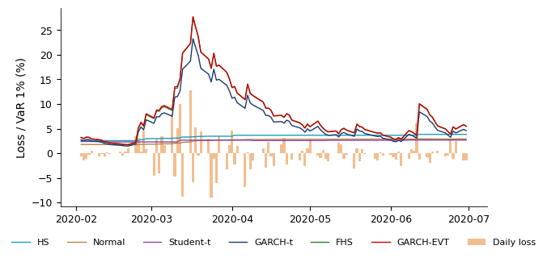
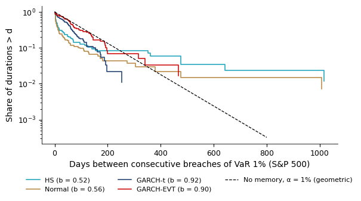

Chapter 8: Backtesting and Evaluating Risk Forecasts
Daniel Traian PELE
Bucharest University of Economic Studies IDA Institute Digital Assets Blockchain Research Center AI4EFin Artificial Intelligence for Energy Finance Romanian Academy, Institute for Economic Forecasting MSCA Digital Finance
“The elicitability of a functional opens the possibility to compare competing forecasts and to rank them in terms of their realized scores.” — Fissler & Ziegel (2016)
GARCH-EVT (GARCH volatility with an extreme value theory tail): the VaR 1% is breached on 1.15% of days on the S&P 500 and on 0.97% on the BET (target 1%)
is a rate close to 1% enough to call a model good?
With \(T = 250\) days and a true breach rate of 2%, the Kupiec POF test (proportion of failures) rejects only 24% of the time
a doubled breach rate goes unrejected in three years out of four
The dynamic quantile (DQ) test rejects every S&P 500 model, filtered historical simulation (FHS) included
ES (Expected Shortfall) cannot be ranked on its own, but the pair (VaR, ES) can, with the consistent FZ0 score
FHS has the lowest mean FZ0 loss on the S&P 500 and the BET
A risk forecast cannot be checked on a single day: a loss above VaR 1% is an event that should occur on about 1% of days. The chapter's question is whether a risk forecast can nevertheless be proven wrong, and on what evidence we choose between several forecasts. Backtesting compares forecasts made with the previous day's information with the outcomes that followed. The conditional calibration of Christoffersen (1998) requires the breaches to be independent Bernoulli variables with probability \(\alpha\): their number must be right, and they must not cluster. For the GARCH-EVT model, with GARCH volatility and an extreme value theory tail, the VaR 1% is breached on 1.15% of days on the S&P 500 and on 0.97% on the BET.
A rate close to 1% is not enough to call a model good. With 250 days and a true breach rate of 2%, the POF (proportion of failures) test of Kupiec (1995) rejects only 24% of the time: a doubled rate goes unrejected in three years out of four. For 50% power the true rate would have to be about 2.7% at 250 days and 1.7% at 1,000 days. Different tests examine different failures: the DQ (dynamic quantile) test rejects every S&P 500 model, filtered historical simulation (FHS) included, because breaches are predictable from the VaR level and from lagged breaches. Non-rejection is not validation.
Expected Shortfall (ES) is tested through exceedance residuals and through the \(Z_2\) statistic of Acerbi & Szekely (2014), with p-values obtained by simulation. On the S&P 500 and the BET, FHS and GARCH-EVT are not rejected at 5%, while GARCH-t is rejected by \(Z_2\) in both markets. ES alone cannot be ranked, however: no scoring function is consistent for ES on its own. Fissler & Ziegel (2016) show that the pair (VaR, ES) is elicitable, and the FZ0 score allows forecasts to be compared with Diebold–Mariano tests and the Model Confidence Set. FHS has the lowest mean FZ0 loss on the S&P 500 and the BET.
Rejection probability at 5% of the POF test as a function of the true breach probability of a VaR 1% forecast: exact power (solid lines) and local asymptotic power (dashed lines), for \(T = 250\) (blue) and \(T = 1{,}000\) days (red). Interactive chart: “Power of the POF Test” →
What you will be able to do
Derive the local power of the POF test and the minimiser of the pinball loss.
Compute the tests of the number and the timing of VaR breaches, with the size and power of each test at the available number of days.
Compute ES backtests: exceedance residuals, \(Z_2\) by simulation and statistics built on the PIT (probability integral transform).
Interpret rankings of (VaR, ES) forecasts by a consistent score, Diebold–Mariano tests and the Model Confidence Set.
Interpret what a distribution-free (conformal) VaR does and does not guarantee.
A Value-at-Risk (VaR) or Expected Shortfall (ES) forecast is a statement about the tail of tomorrow's loss distribution. On any single day the realised loss is one draw from that distribution, so one day can neither confirm nor refute the forecast. Evidence about a risk model therefore accumulates only over many days, and the tail, by construction, contains few of them. The chapter treats three tasks in turn: calibration, comparison of competing forecasts, and the decision a risk manager or a supervisor takes on the available evidence.
How Can We Tell Whether a Risk Forecast Is Useful?
The first task is calibration: whether a VaR or ES forecast is right day after day, and whether a backtest can tell. A forecast is calibrated when the losses that follow it behave as the forecast says they should, on average and also conditionally on what was known when the forecast was made. Calibration is a property of one forecast taken alone, and several forecasts can be calibrated at the same time.
The second task is comparison. When two or more forecasts pass the calibration tests, or when all of them fail, the question becomes which one is better, and whether the gap between them is larger than sampling noise. Ranking requires a scoring function that rewards the true risk measure, and a test of the difference in mean scores. The third task is the decision: what can be concluded when the tail of interest holds only a few days a year. For VaR 1%, a year of 250 trading days holds about 2.5 expected breaches, and the power of any test built on so few events is limited.
The worked exercises of Seminar 8 follow the same order: the Kupiec test (A1), the Christoffersen test (A2), the \(Z_2\) statistic (A4), and the FZ0 loss with the Diebold–Mariano (DM) test (B2). Readings and derivations are in the Appendix.
In brief
Calibration
is a VaR (Value-at-Risk) or ES (Expected Shortfall) forecast right, day after day?
can a backtest tell?
Comparison
which of several forecasts is better?
is the gap significant?
Decision: what can we conclude when the tail holds only a few days a year?
Worked exercises: Seminar 8, A1 (Kupiec), A2 (Christoffersen), A4 (\(Z_2\)), B2 (FZ0 and DM); readings and derivations: Appendix
derive the local power of the POF test and the minimiser of the pinball loss
compute the tests of the number and the timing of VaR breaches, with the size and power of each test at your \(T\)
compute ES backtests: exceedance residuals, \(Z_2\) by simulation and statistics built on the PIT (probability integral transform)
interpret rankings of (VaR, ES) forecasts by a consistent score, DM tests and the MCS
DM: Diebold–Mariano
MCS: model confidence set
interpret what a distribution-free (conformal) VaR does and does not guarantee
Detailed examples and advanced topics are in Further Topics, before the Appendix
the footer button leads there; the Back button returns to the starting slide
Further Topics and Appendix: reading for familiarity
Why Backtest Risk Forecasts?
Backtesting compares risk forecasts made with the information available at the close of day \(t-1\) with the outcomes observed on day \(t\). This section fixes the objects that are tested (losses, VaR and ES), states the property a correct sequence of forecasts must have, and introduces the six forecasting methods and the four markets used throughout the chapter.
Let \(P_t\) be the closing price on day \(t\) and \(X_t = r_t = \ln(P_t/P_{t-1})\) the daily log return. The chapter works with the daily loss\(L_t = -r_t\), so that a positive value means money lost. The information set \(\mathcal{F}_{t-1}\) contains everything known at the close of day \(t-1\); every forecast for day \(t\) is a function of \(\mathcal{F}_{t-1}\) only.
VaR at level \(\alpha\) is the loss exceeded with probability \(\alpha\). With \(q_\alpha(X)\) the \(\alpha\)-quantile of the return, as in Chapter 7,
Equivalently, (8.1) is the \((1-\alpha)\)-quantile of the loss \(L_t\). The level is stated as the tail probability: VaR 1% is the loss exceeded on 1% of days. If VaR 1% equals 3%, the loss should exceed 3% on about one day in a hundred. The level convention matters for backtesting, because the expected number of breaches in \(T\) days is \(\alpha T\).
In brief
Backtesting: compare risk forecasts made with the information \(\mathcal{F}_{t-1}\) with the outcomes that followed
\(\mathcal{F}_{t-1}\): everything known at the close of day \(t-1\)
Daily log return: \(X_t=r_t=\ln(P_t/P_{t-1})\), where \(P_t\) is the closing price on day \(t\)
Daily loss: \(L_t=-r_t\) (a positive value means money lost)
VaR: the loss exceeded with probability \(\alpha\), minus the \(\alpha\)-quantile \(q_\alpha\) of the return (Chapter 7)
VaR says where the tail starts but not how deep it goes. Expected Shortfall averages the quantiles \(q_u\) over all tail levels \(u \le \alpha\); for a continuous distribution it is the mean loss beyond VaR:
Because (8.2) averages losses that all exceed VaR, ES is never below VaR at the same level. For Student-t losses with \(\nu = 4\) degrees of freedom, a standard deviation of 1% and \(\alpha = 2.5\%\), VaR is 1.96% and ES is 2.82%; the gap reflects the heavy tail of the t distribution.
The two levels used in the chapter come from banking regulation. VaR 1% is the level of the Basel backtesting framework of 1996, and ES 2.5% is the capital measure of the Fundamental Review of the Trading Book (FRTB) of 2019. Under the Normal distribution with standard deviation \(\sigma\), ES 2.5% is \(2.338\,\sigma\) and VaR 1% is \(2.326\,\sigma\). The change of measure therefore keeps about the same level of prudence for Normal losses, while ES 2.5% also accounts for the depth of the tail when losses are heavy-tailed.
In brief
ES: the average of the quantiles \(q_u\) over all tail levels \(u\le\alpha\), i.e. the mean loss beyond VaR
A breach (or exception) occurs on day \(t\) when the loss exceeds the VaR forecast made on day \(t-1\) for day \(t\):\(I_t = \mathbf{1}\{L_t > \mathrm{VaR}_t\}\). The chapter uses one-day forecasts throughout. Ten-day forecasts, the horizon of the Basel capital charge, would overlap from one day to the next, and their breaches would be dependent by construction.
A sequence of VaR forecasts is conditionally calibrated in the sense of Christoffersen (1998) if
Condition (8.3) implies that the breach indicators \(I_t\) are i.i.d. Bernoulli(\(\alpha\)): the probability of a breach is \(\alpha\) whatever happened before, so the indicators are also independent of their own past. Two testable consequences follow. Unconditional coverage requires about \(\alpha T\) breaches in \(T\) days. Independence requires that breaches do not cluster: a breach today must not make a breach tomorrow more likely. The tests of the next section examine these two consequences separately and jointly.
In brief
A breach (exception): \(I_t=\mathbf{1}\{L_t>\mathrm{VaR}_t\}\), where \(\mathrm{VaR}_t\) is the forecast made on day \(t-1\) for day \(t\)
One-day forecasts: 10-day forecasts would overlap and produce dependent breaches
Conditional calibration (Christoffersen (1998)): \(P(I_t=1\mid\mathcal{F}_{t-1})=\alpha\) for all \(t\)
so the \(I_t\) are i.i.d. Bernoulli(\(\alpha\))
Two testable consequences
Unconditional coverage: about \(\alpha T\) breaches in \(T\) days
The chapter backtests six methods, all estimated on a rolling window of the last 1,000 daily observations; the data and the window are described in Further Topics. Three methods are unconditional: historical simulation (HS) takes the empirical quantile of the last 1,000 losses; the Normal method uses the Normal distribution with the window's mean and standard deviation; the Student-t method fits a location, a scale and the degrees of freedom \(\nu\) to the window. Each assigns the same weight to every day of the window, so the forecast reacts slowly to a burst of volatility.
The other three are conditional, or filtered: they multiply a scale \(\sigma_t\), updated daily by a GARCH (generalised autoregressive conditional heteroskedasticity) model from Chapter 5, by a standardised tail. The variance follows \(\sigma_t^2 = \omega + a\,\varepsilon_{t-1}^2 + b\,\sigma_{t-1}^2\), with \(\varepsilon_{t-1} = r_{t-1} - \mu\);\(a\) measures the reaction to yesterday's shock and \(b\) the persistence. GARCH-t uses Student-t shocks. Filtered historical simulation (FHS) uses the empirical quantiles of the standardised residuals \(z_t = \varepsilon_t/\sigma_t\). GARCH-EVT fits a generalised Pareto distribution (GPD), from extreme value theory (EVT), to the largest 10% of standardised losses, 100 exceedances out of 1,000, following McNeil & Frey (2000).
The design separates two ingredients of a risk forecast: the scale, fixed or time-varying, and the shape of the tail, Normal, Student-t, empirical or GPD. Comparing GARCH-t, FHS and GARCH-EVT, which share the same volatility filter, isolates the effect of the tail; comparing Student-t with GARCH-t isolates the effect of the time-varying scale.
In brief
Model
One-day VaR and ES from
HS
historical simulation: the empirical quantile of order \(1-\alpha\) of the last 1000 losses
Normal
the Normal distribution with the window mean and standard deviation
Student-t
a Student-t fitted to the window (location, scale, degrees of freedom \(\nu\))
GARCH-t
GARCH (generalised autoregressive conditional heteroskedasticity, Chapter 5): \(\sigma_t^2=\omega+a\,\varepsilon_{t-1}^2+b\,\sigma_{t-1}^2\), with \(\varepsilon_{t-1}=r_{t-1}-\mu\); \(a\): reaction to yesterday's shock; \(b\): persistence; Student-t shocks
FHS
filtered HS: GARCH volatility \(\times\) empirical quantiles of \(z_t=\varepsilon_t/\sigma_t\)
GARCH-EVT
EVT (extreme value theory) tail: GARCH volatility \(\times\) a GPD (generalised Pareto) tail fitted to the largest 10% of standardised losses (100 exceedances out of 1 000) (McNeil & Frey (2000))
Unconditional (HS, Normal, Student-t): one distribution for the whole 1000-day window
every day in the window has the same weight, so the forecast reacts slowly to a volatility burst
Conditional or filtered (GARCH-t, FHS, GARCH-EVT): a scale \(\sigma_t\) updated daily by GARCH \(\times\) a standardised tail
The chart shows the GARCH-EVT forecasts on the four markets of the chapter: the S&P 500 index, the BET index of the Bucharest Stock Exchange, Bitcoin and the EUR/RON exchange rate. Each panel plots the daily losses, the VaR forecast for the same day and the days on which the loss exceeded the forecast. The selector chooses the VaR level (1%, 2.5% or 5%), and the slider sets the end of the evaluation period; the ▶ button advances it year by year from 2007 to 2026.
Question for the room The GARCH-EVT VaR 1% breach rate is 1.15% on the S&P 500. Is a rate close to 1% enough to call the model good?
Answer
No. The rate checks only the number of breaches: 57 in 4,959 days. The Kupiec test does not reject GARCH-EVT on the S&P 500 (p = 0.302), but the DQ test does (asymptotic p < 0.001; simulated frequency under the Monte Carlo process of the chapter: 0.5%): the breaches can be predicted from the VaR level and from past breaches.
The VaR moves with volatility: it doubles or triples in 2008, in March 2020 and in the 2022 crypto crash. The GARCH-EVT VaR 1% is breached on 1.15% of days on the S&P 500, 57 breaches in 4,959 days, and on 0.97% on the BET, against a target of 1%. On the S&P 500 the Kupiec test does not reject GARCH-EVT (\(p = 0.302\)), but the dynamic quantile (DQ) test does: the breaches can be predicted from the VaR level and from past breaches. A breach rate close to the target is a statement about the number of breaches, not about when they occur.
In the chart, orange marks the daily losses, red the VaR 1% forecast by GARCH-EVT and blue dots the breaches, the days with \(L_t > \mathrm{VaR}_t\). The forecast rises within days of a volatility shock and falls back as the shock fades, which is the behaviour a filtered model is designed to have.
On Bitcoin and EUR/RON the VaR line starts later than the losses. On these two markets the first GARCH fits are inadmissible, and the GARCH-based forecasts for those days are withheld rather than imputed; the rule is explained in Further Topics. EUR/RON has a much smaller scale than the other three series: it is a managed exchange rate, with long calm spells and rare jumps.
The chart supports a description, not a test. The rates of 1.15% and 0.97% look close to the target, and the question the chapter must answer is whether a rate close to 1% is enough to call a model good.
In brief
Orange: daily losses; red: VaR 1% forecast by GARCH-EVT; blue dots: breaches (\(L_t>\mathrm{VaR}_t\))
The VaR moves with volatility: it doubles or triples in 2008, March 2020 and the 2022 crypto crash
GARCH-EVT VaR 1% breach rate: 1.15% on the S&P 500 and 0.97% on BET (target: 1%)
On Bitcoin and EUR/RON, the VaR line starts after the withheld GARCH forecasts (Further Topics)
EUR/RON has a much smaller scale: a managed exchange rate, long calm spells, rare jumps
What the result supports: description
Question for the chapter: is a rate close to 1% enough to call a model good?
Each backtest checks one implication of conditional calibration (8.3): the number of breaches, their dependence on yesterday's breach, the spacing between them, or the depth of the losses beyond VaR. No single test checks all of them. A model that passes one test may fail another, and the pattern across tests carries more information than any single \(p\)-value.
Non-rejection is not validation. A test that does not reject is informative only if it has power against the relevant alternatives at the available sample length \(T\); with a few breaches a year, many wrong models pass. The null hypothesis is also joint: it concerns the whole forecasting procedure, that is, the distribution, the volatility dynamics, the estimated parameters, the window length and the refit rule. A rejection says that the procedure fails, not which of these components failed.
Two further limits follow from the nature of the data. There is one outcome per day, so evidence accumulates only over many days. And the textbook \(\chi^2\) limits of the likelihood-ratio tests treat \(\mathrm{VaR}_t\) as known, whereas in practice it is computed from estimated parameters; the effect of estimation is discussed under backtests under estimation risk.
In brief
Each backtest checks one implication of conditional calibration
Non-rejection is not validation
it is informative only if the test has power against the relevant alternatives at the available \(T\)
\(H_0\) is a joint hypothesis on the whole forecasting procedure
distribution, volatility dynamics, estimated parameters, window length and refit rule
A rejection does not say which component failed
One outcome per day: evidence accumulates only over many days
The textbook \(\chi^2\) limits treat \(\mathrm{VaR}_t\) as known
The objects of backtesting are the daily loss, the VaR and ES forecasts made with yesterday's information, and the breach indicators. Conditional calibration requires the breaches to be i.i.d. Bernoulli(\(\alpha\)), which yields two testable properties: the right number of breaches and no clustering. Six methods, three unconditional and three filtered, are evaluated on four markets with different volatility regimes.
Backtesting VaR: Coverage and Independence
The tests of this section use only the breach sequence \(I_1, \dots, I_T\). Each is stated with its null hypothesis, its statistic, the distribution of the statistic under the null and, where it matters, its size and power at the available \(T\). The power calculations show how little a single year of data can reveal about a VaR 1% forecast.
Does VaR Have the Right Number of Breaches, at the Right Times?
Four tests are presented, each targeting a different implication of conditional calibration. The test of Kupiec (1995) checks the number of breaches. The test of Christoffersen (1998) checks first-order memory, whether a breach today depends on a breach yesterday. Duration tests check the spacing of breaches, using every gap between consecutive breaches. The DQ (dynamic quantile) test of Engle & Manganelli (2004) checks whether any predictor known yesterday can forecast today's breach.
For each test the presentation states the null, the statistic, its distribution under \(H_0\), and its size and power at the available \(T\). The section starts with an empirical example: two S&P 500 forecasts with almost the same number of breaches, whose breaches nevertheless fall at very different times.
In brief
Kupiec: the number of breaches
Christoffersen: first-order memory
Duration tests: the spacing of breaches
DQ (Dynamic Quantile): any predictor known yesterday
For each test: the null, the statistic, its distribution under \(H_0\), and size and power at the available \(T\)
We start with two S&P 500 forecasts with almost the same number of breaches
The chart compares two VaR 1% forecasts for the S&P 500: historical simulation, an unconditional method, and GARCH-t, a filtered one. The upper panel shows the daily losses and the two VaR lines, with the breaches of each model marked; the lower panel shows when the breaches occur. The slider chooses the period shown (at the far left, the whole period), and the ▶ button moves through the years.
Question for the room HS has 83 breaches and GARCH-t 88 over the same 4,959 days. Can these counts alone establish which forecast is better?
Answer
No. Both rates, 1.67% and 1.77%, exceed the 1% target, and Kupiec rejects both (p < 0.001). The breaches differ in timing: HS has 26 breaches in 2008 and 12 in 2020, GARCH-t 8 and 6. The independence test rejects HS (LR_ind = 15.90, p < 0.001) but not GARCH-t (p = 0.095): this is a diagnostic difference, not proof that GARCH-t is superior under every criterion.
HS has 83 breaches and GARCH-t 88, over the same 4,959 days. Both rates, 1.67% and 1.77%, exceed the 1% target, and the Kupiec test rejects both (\(p < 0.001\)). The breaches differ in timing: HS has 26 breaches in 2008 and 12 in 2020, GARCH-t 8 and 6. The independence test rejects HS (\(\mathrm{LR}_{ind} = 15.90\),\(p < 0.001\)) but not GARCH-t (\(p = 0.095\)). This is a diagnostic difference between the two procedures, not a proof that GARCH-t is better under every criterion.
The HS forecast is a step function. It changes only when an extreme day enters or leaves the 1,000-day window, so after a calm period it stays low when volatility rises, and after a crisis it stays high for four years. GARCH-t rises from the day after a volatility shock. Since the HS breaches come in bursts, in 2008 and 2020, the timing of breaches must be tested as well as their number. A zoom on March 2020 is in Further Topics.
In brief
Chart: VaR 1% of HS (turquoise) and GARCH-t (blue)
daily losses (orange) and each model's breaches (markers)
HS is a step function: it moves only when extreme days enter or leave the 1 000-day window
GARCH-t rises from the day after a volatility shock
Breaches: 83 for HS and 88 for GARCH-t, in 4 959 days
HS breaches come in bursts (2008, 2020), so when they occur must be tested too
The proportion of failures (POF) test of Kupiec (1995) checks unconditional coverage: whether the breach rate equals \(\alpha\), whatever the timing of the breaches. The data are the number of breaches \(x = \sum_t I_t\) in \(T\) days and the estimated breach rate \(\hat\pi = x/T\). The null hypothesis is \(H_0: \pi = \alpha\) against \(H_1: \pi \ne \alpha\), where \(\pi\) is the true breach probability.
Under \(H_0\) and independence, \(x\) is Binomial(\(T\),\(\alpha\)). The likelihood-ratio statistic compares the Binomial likelihood of \(x\) under \(\alpha\) with that under the estimate \(\hat\pi\):
The statistic (8.4) is non-negative. It equals 0 when \(\hat\pi = \alpha\), because the two likelihoods then coincide, and it grows as \(\hat\pi\) moves away from \(\alpha\) in either direction. The test ignores the order of the breaches: any permutation of the same sequence gives the same \(\mathrm{LR}_{uc}\).
In brief
What it tests: whether the breach rate equals \(\alpha\) (unconditional coverage), whatever their timing
At the 5% level the test rejects when \(\mathrm{LR}_{uc} > 3.84\), the 95% quantile of \(\chi^2_1\), equal to \(1.96^2\). The test is two-sided: too few breaches also lead to rejection, because a VaR breached too rarely is too conservative and ties up capital. For small \(T\) the \(\chi^2_1\) limit is a poor approximation, and the exact Binomial(\(T\),\(\alpha\)) distribution of \(x\) is used instead. The actual size of a rule is then the sum of the Binomial probabilities of the rejected counts. Since \(x\) is discrete, no rule has a size of exactly 5%.
The example is the GARCH-t forecast for the S&P 500 in 2008: \(x = 8\) breaches in \(T = 253\) days, against \(2.53\) expected under \(H_0\). The statistic is \(\mathrm{LR}_{uc} = 7.60\), with \(p = 0.0058\) from the \(\chi^2_1\) approximation. The exact two-sided Binomial \(p\)-value, obtained by doubling the smaller tail, is \(2P(X \ge 8) = 0.009\).
Both \(p\)-values are below 5%: in 2008 the GARCH-t VaR was breached too often. The two calculations agree here because the observed count is far in the tail; near the boundary of the acceptance region they can disagree, and the exact calculation is then the reference.
In brief
Reject at 5% if \(\mathrm{LR}_{uc}>3.84\) (\(=1.96^2\), the 95% quantile of \(\chi^2_1\))
The test is two-sided: too few breaches also lead to rejection
For small \(T\) we use the exact Binomial(\(T,\alpha\)) distribution of \(x\)
Actual size: the sum of the Binomial probabilities of the rejected counts \(x\)
with discrete \(x\), no rule has size exactly 5%
Example: S&P 500, GARCH-t, year 2008: \(x=8\) breaches in \(T=253\) days, against 2.53 expected
\(\mathrm{LR}_{uc}=7.60\), with \(p=0.0058\) (\(\chi^2_1\) approximation)
exact two-sided Binomial \(p\)-value (doubling the smaller tail): \(2P(X\ge 8)=0.009\)
Both reject at 5%: in 2008 the GARCH-t VaR was breached too often
The chart plots \(\mathrm{LR}_{uc}\) from (8.4) against the number of breaches \(x\), for one year of data (\(T = 250\), left chart) and for a sample length chosen with the slider (right chart). The horizontal line at 3.84 is the 5% critical value; the counts below it are those the test does not reject. The selector chooses the VaR level \(\alpha\) (1%, 2.5% or 5%), and the ▶ button raises the \(T\) of the right chart from 250 to 5,000 days.
Question for the room ▶ raises T of the lower chart from 250 to 5,000 days. What happens to the range of breach counts that the rule LR_uc > 3.84 does not reject, relative to T?
Answer
The accepted range is 1–6 breaches at T = 250 (0.4%–2.4% of the days), 5–16 at T = 1,000 and 37–64 at T = 5,000 (0.74%–1.28%): the count grows and the rate concentrates around 1%. At T = 250, x = 0 gives LR_uc = −500 ln 0.99 = 5.03 > 3.84: the rule also rejects in the direction of too few breaches. P(x = 0) = 8.1% is not the Kupiec p-value. The effective size of the rule is 9.5% at T = 250 and 4.6% at T = 5,000; a rejection alone does not prove that the model is wrong.
The accepted range is 1–6 breaches at \(T = 250\), that is, 0.4%–2.4% of the days, 5–16 at \(T = 1{,}000\) and 37–64 at \(T = 5{,}000\), that is, 0.74%–1.28%. The accepted count grows with \(T\), and the accepted rate concentrates around 1%. The effective size of the rule \(\mathrm{LR}_{uc} > 3.84\) is 9.5% at \(T = 250\) and 4.6% at \(T = 5{,}000\), so in a single year a rejection alone does not prove that the model is wrong.
For VaR 1%, the test accepts \(x\) from 1 to 6 in one year (\(T = 250\)) and from 5 to 16 in four years (\(T = 1{,}000\)). The lower bound is the less intuitive one: even \(x = 0\) is rejected in one year, since \(\mathrm{LR}_{uc} = -500\ln 0.99 = 5.03 > 3.84\). A VaR that is never breached in a year is judged too conservative. The probability of zero breaches under a correct VaR 1% is \(0.99^{250} = 8.1\%\); this is the probability of an event, not the Kupiec \(p\)-value.
One year holds about 2.5 informative days for VaR 1%. A decision based on so few events has low power, and the practical recommendations follow from this: use long samples, test at two levels (\(\alpha = 1\%\) and \(2.5\%\)), and combine several tests that examine different properties of the breach sequence.
In brief
\(\mathrm{LR}_{uc}\) against the number of breaches \(x\), one year (top) and four years (bottom) of VaR 1%
\(T=250\): the test accepts \(x\) from 1 to 6; \(T=1000\): from 5 to 16
Even \(x=0\) is rejected in one year
\(\mathrm{LR}_{uc}=-500\ln 0.99=5.03\): a VaR never breached is too conservative
One year holds about 2.5 informative days for VaR 1%
use long samples, two levels (\(\alpha=1\%\) and \(2.5\%\)) and several tests
The chart shows the power of the POF test, the probability of rejecting at 5% as a function of the true breach rate \(\pi\) (horizontal axis), for a VaR 1% forecast. Solid lines give the exact power from the Binomial distribution; dashed lines give the local approximation \(\chi^2_1(\lambda)\) with noncentrality \(\lambda = T(\pi-\alpha)^2/(\alpha(1-\alpha))\), derived on the next slide. The blue curves are for \(T = 250\); the slider sets the \(T\) of the red curves, and the ▶ button raises it from 250 to 5,000 days.
Question for the room ▶ raises T of the red curves from 250 to 5,000 days. At the end, what is the exact power of the POF test when the true breach rate is π = 2%?
Answer
Practically 100%. The exact (Binomial) power at π = 2% is 24% at T = 250, 54% at T = 500, 78% at T = 1,000, 96% at T = 2,000 and practically 100% at T = 5,000; the local χ²₁(λ) approximation gives 36%, 61%, 89%, 99% and 100%. The effective size of the rule LR_uc > 3.84 is 9.5% at T = 250 and 4.6% at T = 5,000: the threshold 3.84 corresponds to a nominal 5% level, not to an effective size of exactly 5%.
At \(T = 250\) and \(\pi = 2\%\) the exact power is 24% and the local power 36%. A doubled breach rate therefore goes unrejected in three years out of four. At \(\pi = 2\%\) the exact power is 54% at \(T = 500\), 78% at \(T = 1{,}000\), 96% at \(T = 2{,}000\) and practically 100% at \(T = 5{,}000\); the local approximation gives 61%, 89%, 99% and 100%.
The rule \(\mathrm{LR}_{uc} > 3.84\) has an actual size of 9.5% at \(T = 250\), of which \(P(x = 0) = 8.1\%\) alone. A power of 50% requires \(\pi \approx 2.7\%\) at \(T = 250\) and \(\pi \approx 1.7\%\) at \(T = 1{,}000\). The threshold 3.84 corresponds to a nominal 5% level, not to an effective size of exactly 5%.
In brief
Axes: true breach rate (horizontal) and rejection probability at 5% (vertical)
Solid line: exact Binomial calculation; dashed line: local approximation \(\chi^2_1(\lambda)\)
\(\lambda=T(\pi-\alpha)^2/(\alpha(1-\alpha))\)
\(T=250\), \(\pi=2\%\): exact power 24%, local power 36%
So a doubled breach rate goes unrejected in three years out of four
The rule \(\mathrm{LR}_{uc}>3.84\) has an actual size of 9.5% at \(T=250\); \(P(x=0)=8.1\%\) alone
For 50% power: \(\pi\approx 2.7\%\) at \(T=250\) and \(\pi\approx 1.7\%\) at \(T=1000\)
For a fixed true rate \(\pi \ne \alpha\), the power of a consistent test tends to 1 as \(T\) grows, which says nothing useful about finite samples. Local alternatives let the true rate approach \(\alpha\) at the rate \(1/\sqrt T\):\(\pi_T = \alpha + h/\sqrt T\), where \(h\) is a fixed distance on the \(\sqrt T\) scale. Under such alternatives the power stays strictly between 0 and 1 and can be computed in closed form.
A second-order expansion of (8.4) around \(\hat\pi = \alpha\) gives
The noncentrality parameter \(\lambda\) grows with \(T\) and with the squared distance \((\pi-\alpha)^2\), scaled by the Bernoulli variance \(\alpha(1-\alpha)\). The power is \(P(\chi^2_1(\lambda) > 3.84)\) and increases with \(\lambda\). The calculation by hand, and the reason why the exact power at \(T = 250\) is lower than the local one, are in Further Topics.
In brief
Local alternatives: the true rate approaches \(\alpha\) as \(T\) grows, \(\pi_T=\alpha+h/\sqrt T\)
\(h\): a fixed distance on the \(\sqrt T\) scale
Why: with a fixed \(\pi\ne\alpha\) the power tends to 1
local alternatives keep it between 0 and 1 and make it computable
The chart gives, for each of the six models and four markets, the share of days with \(L_t > \mathrm{VaR}_t\), together with the Kupiec \(p\)-value. The selector chooses the VaR level, the slider sets the first year of the evaluation, and the ▶ button moves it forward year by year. Missing GARCH-based values on Bitcoin and EUR/RON are the withheld forecasts.
Question for the room On EUR/RON, the Normal model has a VaR 1% breach rate of 1.06% and a Kupiec p-value of 0.708. What can we conclude at 5%?
Answer
We do not reject the nominal 1% frequency. Kupiec checks only unconditional coverage: p = 0.708 establishes neither breach independence nor the probability that the model is correct. On the S&P 500 (2.70%), BET (1.90%) and Bitcoin (1.74%), the Normal model is rejected.
On EUR/RON the Normal model has a VaR 1% breach rate of 1.06% and a Kupiec \(p\)-value of 0.708. At 5% we do not reject the nominal frequency. This non-rejection concerns unconditional coverage only: it establishes neither the independence of the breaches nor the probability that the model is correct. On the S&P 500 (2.70%), the BET (1.90%) and Bitcoin (1.74%) the Normal model is rejected.
For VaR 1%, the Normal distribution fails everywhere except on EUR/RON, with breach rates of 2.70% on the S&P 500, 1.90% on the BET and 1.74% on Bitcoin. Its tail is too thin for daily equity and crypto losses: the forecast quantile sits too close to the centre, and the loss exceeds it about twice as often as it should.
The comparison between GARCH-t and FHS isolates the shape of the tail, because both use the same GARCH-t volatility. On the S&P 500 and the BET, GARCH-t is breached on 1.77% and 1.46% of days, against 1.23% and 1.20% for FHS. The symmetric Student-t tail, fitted to both sides of the distribution, understates the loss side; the empirical quantiles of the standardised residuals capture the asymmetry.
HS is too conservative on EUR/RON, with a breach rate of 0.51%. An old crisis in the 1,000-day window keeps the empirical quantile high long after the market has calmed down. The same mechanism that makes HS too slow to rise after a calm period makes it too slow to fall after a crisis.
In brief
Share of days with \(L_t>\mathrm{VaR}_t\) for VaR 1%; the Normal distribution fails except on EUR/RON
S&P 500 2.70%, BET 1.90%, Bitcoin 1.74%
Same GARCH-t volatility, different tail (S&P 500, BET)
GARCH-t 1.77% and 1.46% versus FHS 1.23% and 1.20%
evidence against the symmetric t tail on the loss side
HS is too conservative on EUR/RON (0.51%): an old crisis in the window keeps its VaR high
The Kupiec test ignores the order of the breaches. Christoffersen (1998) tests whether today's breach depends on yesterday's by modelling \(I_t\) as a first-order Markov chain with transition probabilities \(\pi_{ij} = P(I_t = j \mid I_{t-1} = i)\). Let \(n_{ij}\) be the number of days on which state \(i\) yesterday is followed by state \(j\) today. The estimated probabilities of a breach after a calm day and after a breach are
The null of no memory is \(H_0: \pi_{01} = \pi_{11} = \pi\), estimated by \(\hat\pi = (n_{01}+n_{11})/\sum n_{ij}\). The likelihood ratio compares one breach probability (numerator) with two probabilities that depend on yesterday's state (denominator):
with a 5% critical value of 5.99. The joint test has two degrees of freedom, so a strong signal in one component can be diluted when the other is close to its null.
In brief
What it tests: whether today's breach depends on yesterday's
the Kupiec test ignores the order of breaches
Model \(I_t\) as a first-order Markov chain with \(\pi_{ij}=P(I_t=j\mid I_{t-1}=i)\)
\(n_{ij}\): transitions from state \(i\) yesterday to state \(j\) today
The chart is a timeline of the VaR 1% breaches on the S&P 500: each tick marks one breach, one row per model. The selector chooses the model tested, and two sliders set the first year and the length, in years, of a subsample; the transition counts \(n_{ij}\) and the Christoffersen statistic are computed on that subsample. The ▶ button moves the subsample forward year by year.
Question for the room For HS over 2007–2010, π̂₁₁ = 0.0732, almost twice π̂₀₁ = 0.0393. Does the Christoffersen test reject independence?
Answer
No: LR_ind = 0.95, with p = 0.33. The estimate π̂₁₁ rests on only 3 pairs of consecutive breaches (n₁₁ = 3, n₁₀ = 38). On the whole 2007–2026 sample, the same test rejects independence for HS: LR_ind = 15.90, p < 0.001.
For HS over 2007–2010, \(\hat\pi_{11} = 0.0732\) is almost twice \(\hat\pi_{01} = 0.0393\), yet the Christoffersen test does not reject independence: \(\mathrm{LR}_{ind} = 0.95\), with \(p = 0.33\). The estimate \(\hat\pi_{11}\) rests on only 3 pairs of consecutive breaches (\(n_{11} = 3\),\(n_{10} = 38\)). On the whole 2007–2026 sample the same test rejects independence for HS: \(\mathrm{LR}_{ind} = 15.90\),\(p < 0.001\).
The unconditional models, HS, Normal and Student-t, show bursts of breaches in 2008, 2015–2016, 2018, 2020 and 2022. Their VaR does not react to a rise in volatility, so the breaches pile up in the weeks after a shock. The filtered GARCH models show no multi-month bursts, but some back-to-back breaches remain: a GARCH volatility rises only after the first large loss.
A test on a subsample can miss clustering. For HS over 2007–2010 the transition counts are \(n_{00} = 928\),\(n_{01} = 38\),\(n_{10} = 38\) and \(n_{11} = 3\), so \(\hat\pi_{11} = 0.0732\) against \(\hat\pi_{01} = 0.0393\). The ratio is almost two, yet \(\mathrm{LR}_{ind} = 0.95\) and \(p = 0.33\). The reason is that \(\hat\pi_{11}\) rests on only 3 back-to-back pairs: its standard error is of the same order as its value. Clustering over weeks rather than consecutive days is also invisible to a first-order Markov test; the duration and DQ tests in Further Topics address it.
In brief
Each tick marks one breach of VaR 1% on the S&P 500; one row per model
HS, Normal and Student-t: bursts in 2008, 2015–2016, 2018, 2020, 2022
Filtered (GARCH) models: no multi-month bursts, yet some back-to-back breaches
A subsample test can miss clustering: HS, 2007–2010, \(n_{00}=928\), \(n_{01}=38\), \(n_{10}=38\), \(n_{11}=3\)
\(\hat\pi_{11}=0.0732\) versus \(\hat\pi_{01}=0.0393\), yet \(\mathrm{LR}_{ind}=0.95\), \(p=0.33\)
The reason: \(\hat\pi_{11}\) rests on only 3 back-to-back pairs
The heat map gives the \(p\)-values of three VaR 1% tests for every model and market: the Kupiec POF test, the conditional coverage (CC) test and the Weibull duration test. A red cell is a rejection and a green cell a non-rejection at the significance level chosen with the slider; the ▶ button raises the level from 1% to 10%. A dash marks a withheld GARCH forecast.
Question for the room For FHS on the S&P 500, Kupiec gives p = 0.116 and the conditional coverage test p = 0.040. How should we interpret the difference at 5%?
Answer
Non-rejection of the nominal frequency does not rule out departures from conditional coverage. Kupiec uses the breach count; the conditional coverage test also uses their sequence, so different decisions do not contradict each other. p = 0.040 is not the probability of the null hypothesis. The DQ test also rejects FHS (asymptotic p < 0.001; simulated frequency: 0.6%), while the duration test does not (p = 0.527).
For FHS on the S&P 500, Kupiec gives \(p = 0.116\) and the conditional coverage test \(p = 0.040\). At 5%, the non-rejection of the nominal frequency does not rule out departures from conditional coverage. Kupiec uses only the breach count, while the conditional coverage test also uses their sequence, so different decisions do not contradict each other; and \(p = 0.040\) is not the probability of the null hypothesis. The DQ test also rejects FHS (asymptotic \(p < 0.001\); simulated frequency 0.6%), while the duration test does not (\(p = 0.527\)).
The DQ test does not appear in the heat map; its asymptotic \(\chi^2_6\)\(p\)-values are reported separately. It rejects every S&P 500 model, including FHS (\(p < 0.001\)) and GARCH-EVT (\(p < 0.001\)). On the BET it does not reject FHS (\(p = 0.200\)) or GARCH-EVT (\(p = 0.279\)). On the S&P 500 the hits are predictable from the VaR level and from lagged hits, a failure that a count of breaches cannot detect. The \(\chi^2_6\) approximation over-rejects in finite samples, and the simulated critical values are discussed in Further Topics.
Different tests examine different failures, and the pattern of decisions carries more information than a single \(p\)-value. The unconditional models fail the duration test almost everywhere, as expected from the bursts in the timeline. GARCH-EVT is not rejected by the conditional coverage or duration tests on the BET. The result supports a comparison of procedures: it ranks the methods by the failures detected, not by a single criterion. The size and power of each test, measured by Monte Carlo, are in Further Topics.
In brief
The chart: \(p\)-values of the Kupiec POF, conditional coverage (CC) and duration (Weibull) tests, VaR 1%
red: rejection, green: no rejection; “—”: withheld GARCH forecast
The DQ test (not in the chart; asymptotic \(\chi^2_6\)\(p\)-values) rejects every S&P 500 model
including FHS (\(p\)\(<\)0.001) and GARCH-EVT (\(p\)\(<\)0.001)
on BET it does not reject FHS (\(p=0.200\)) or GARCH-EVT (\(p=0.279\))
hits are predictable from the VaR level and lagged hits, a failure that counting breaches cannot detect
Different tests examine different failures: read the pattern, not one \(p\)-value
the unconditional models fail the duration test almost everywhere
GARCH-EVT is not rejected by conditional coverage or duration tests on BET
What the result supports: comparison of procedures
The count of breaches is tested by the Kupiec POF test (8.4), first-order memory by the Christoffersen test (8.6), and both jointly by (8.7). At one year of data the POF test has little power: a doubled breach rate is rejected only 24% of the time. On the chapter's data, the unconditional methods fail the independence and duration tests, the Normal tail fails the coverage test on three markets, and the DQ test rejects every S&P 500 model.
The Regulator's View: Basel Traffic Light and FRTB
Banks that compute capital with internal models must backtest their VaR under rules set by the Basel Committee on Banking Supervision (BCBS). The rules are deliberately simple: they count exceptions over the last 250 days and map the count to a capital multiplier. This section states the rules of 1996 and 2019, follows the traffic light through time on the S&P 500, and applies the FRTB desk-level limits to the last year of the sample.
How Does the Supervisor Test? The Basel Traffic Light
Under the framework of BCBS (1996), a bank with an internal model compares its daily VaR 1% with the actual profit and loss (P&L) of each of the last 250 days. An exception is a day on which the loss exceeds the VaR. The rule tests only the number of exceptions, not their size and not their timing.
If the VaR 1% is correct and the exceptions are independent, the number of exceptions in 250 days is \(X \sim \text{Binomial}(250, 0.01)\), and its distribution function is
the second column of the table. The zones are defined by this probability: the yellow zone starts where \(P(X \le x) \ge 95\%\), at 5 exceptions, and the red zone where \(P(X \le x) \ge 99.99\%\), at 10 exceptions. Zero exceptions have probability 8.11%, and four or fewer 89.22%.
The supervisor chose a count rule because it is simple, automatic and hard to game: the bank cannot argue about the interpretation of a count. The cost of this simplicity is the low power computed in the previous section, and the omission of the size of the losses beyond VaR.
In brief
Exceptions
\(P(X\le x)\)
Zone
0
8.11%
green
2
54.32%
green
4
89.22%
green
5
95.88%
yellow
7
99.60%
yellow
9
99.97%
yellow
10
99.99%
red
Banks with internal models compare VaR 1% daily with the actual P&L of the last 250 days (BCBS (1996))
P&L: profit and loss
What it tests: only the number of exceptions, not their size or timing
\(X\sim\) Binomial\((250, 0.01)\): the exceptions of a correct VaR 1% in 250 days
\(P(X\le x)=\sum_{k=0}^{x}\binom{250}{k}0.01^{k}\,0.99^{250-k}\): the second column of the table
Yellow starts where \(P(X\le x)\ge 95\%\), red where \(P(X\le x)\ge 99.99\%\)
Under BCBS (1996), capital was based on the 10-day VaR 1% with a multiplier of 3. The multiplier increased by 0.40–0.85 in the yellow zone, depending on the number of exceptions, and by 1 in the red zone. The backtest thus fed directly into capital: a model with too many exceptions cost the bank more.
The Fundamental Review of the Trading Book (BCBS, 2019) moved capital to ES 2.5% but kept backtesting on the VaR 1% of the last 250 days. The FRTB multiplier is 1.50 in the green zone (0–4 exceptions), 1.70–1.92 in the yellow zone (5–9) and 2.00 in the red zone (10 or more). In addition, each trading desk is checked separately: a desk moves to the standardised approach if, over 12 months, it has more than 12 exceptions of VaR 1% or more than 30 of VaR 2.5%. Approval of the internal models approach (IMA) also requires a P&L attribution test.
The Basel rule counts VaR exceptions, and ES is not tested directly. This is a regulatory choice, not a mathematical necessity. The fact that ES is not elicitable on its own does not prevent ES backtesting, as the tests of Acerbi & Szekely (2014) in the ES section show. Elicitability concerns the comparison of forecasts, treated in the elicitability section.
The chart applies the Basel count rule to the six models on each market: for every day it counts the VaR 1% exceptions in the last 250 days, with bands for the green, yellow and red zones. The selector chooses the market, the slider sets the day on which the 250-day window ends, and the ▶ button moves that day through the sample.
Question for the room A model is in the red zone today. If tomorrow has no breach, can it remain in the red zone?
Answer
Yes, if the updated 250-day window still contains at least 10 breaches. The window advances by one day: the new observation enters and the oldest leaves, so a calm day lowers the exception count only if the day that leaves had a breach. On the S&P 500, Normal spends 22.3% of the days in the red zone, HS 14.7%, GARCH-t 2.0% and FHS 0.8%; the peaks of Normal (37) and HS (27) fall in the window ending 01.12.2008.
On the S&P 500 the share of days spent in the red zone is 22.3% for the Normal model, 14.7% for HS, 2.0% for GARCH-t and 0.8% for FHS; GARCH-t is in the yellow zone 46.5% of the time. The peaks are 37 exceptions for the Normal model and 27 for HS, both in the 250 days ending on 1 December 2008. A model can remain in the red zone on a day without a breach: the window moves by one day, and a calm day lowers the count only if the day that leaves the window had a breach.
In brief
VaR 1% exceptions in the last 250 days, S&P 500; bands: green, yellow, red zones
Share of days in red: Normal 22.3%, HS 14.7%, GARCH-t 2.0%, FHS 0.8%
GARCH-t is yellow 46.5% of the time
Peak: Normal 37 and HS 27 exceptions, in the 250 days ending 01.12.2008
Overlapping windows: the penalty lasts a year after a crisis, when capital is already strained
What the result supports: comparison of procedures
The table applies the FRTB desk limits to the last 250 days of each series, up to 18 September 2026. Each cell gives the number of exceptions of VaR 1% and of VaR 2.5%; on these days, GARCH forecasts exist on all four markets. The largest counts are 6 exceptions of VaR 1% (the Normal model on the BET) and 9 of VaR 2.5% (several models on the BET), so every model sits comfortably within the limits of 12 and 30.
The check is illustrative. FRTB applies the limits to the P&L of a trading desk, both actual and hypothetical, not to the returns of an index. The last year of the sample was also calm, and a green zone today says little about the next crisis: the traffic light in 2008 shows how quickly the count rises once volatility changes.
In brief
Model
S&P 500
BET
Bitcoin
EUR/RON
HS
0 / 2
4 / 7
3 / 4
1 / 5
Normal
2 / 2
6 / 9
3 / 5
1 / 4
Student-t
0 / 2
4 / 9
1 / 4
5 / 8
GARCH-t
3 / 6
4 / 9
3 / 5
4 / 5
FHS
3 / 4
4 / 6
4 / 5
3 / 4
GARCH-EVT
3 / 3
2 / 7
4 / 5
3 / 4
Cells: exceptions of VaR 1% / VaR 2.5% over the last 250 days of each series, up to 18.09.2026
On these days, GARCH forecasts exist on all four markets
All models sit comfortably within the limits 12 and 30
Illustrative only: FRTB applies the limits to desk P&L (actual and hypothetical), not to index returns
The last year was calm: a green zone today says little about the next crisis
Section summary
The regulatory backtest is a count of VaR 1% exceptions over 250 days, mapped to zones by the Binomial distribution (8.8). Since 2019 capital rests on ES 2.5%, but the backtest still counts VaR exceptions, at the bank level and at the desk level. On the S&P 500 the unconditional models spend long periods in the red zone, and the overlapping 250-day windows keep the penalty in place for a year after a crisis.
Backtesting Expected Shortfall
ES is the mean loss beyond VaR, so the information for testing it comes only from the roughly \(\alpha T\) days in the tail. This section presents three families of tests: the exceedance residuals of McNeil & Frey (2000), the \(Z\) statistics of Acerbi & Szekely (2014) with \(p\)-values by simulation, and tests built on the probability integral transform (PIT). All three need more than the ES forecast itself.
The information on ES comes from the tail days only. On the S&P 500 with \(\alpha = 2.5\%\), about 124 of the 4,959 evaluation days are expected in the tail; in a single year, 6.25 days. Over one year, the standard error of the tail mean is therefore of order \(1/\sqrt{6.25} = 0.40\) standard deviations of the tail losses. An ES forecast that is wrong by a fraction of the tail dispersion cannot be detected in one year.
Three families of tests use these days in different ways. Exceedance residuals (McNeil & Frey, 2000) compare the losses on breach days with the forecast ES, on the volatility scale. The \(Z_1\) and \(Z_2\) statistics (Acerbi & Szekely, 2014) compare realised and forecast tail losses directly. PIT-based statistics, the cumulative violations of Du & Escanciano (2017) and the multinomial tests of Kratz, Lok & McNeil (2018), use the whole forecast distribution in the tail.
All of them need more than the ES forecast: the VaR, the volatility or the whole forecast distribution. A rejection is therefore a rejection of a joint forecast. A test that uses the ES forecasts alone is the subject of the case study.
In brief
ES is the mean loss beyond VaR: the information comes only from about \(\alpha T\) tail days
S&P 500, \(\alpha=2.5\%\): about 124 days out of 4 959; in one year, 6.25 days
Over one year, the standard error of the tail mean is of order \(1/\sqrt{6.25}=0.40\) standard deviations of the tail losses
The test of McNeil & Frey (2000) checks whether the mean loss on breach days equals the one forecast by ES, measured on the volatility scale. On the days with \(L_t > \mathrm{VaR}_t\), at the VaR 2.5% level, the exceedance residual is
\[e_t = \frac{L_t - \mathrm{ES}_t}{\sigma_t} ,\]
(8.9)
where \(\sigma_t > 0\) is the volatility forecast made at \(t-1\). If both VaR and ES are correct, \(E[e_t \mid L_t > \mathrm{VaR}_t, \mathcal{F}_{t-1}] = 0\), by the definition (8.2) of ES as the conditional mean beyond VaR. A wrong VaR changes the conditioning event, so the test is a test of the pair.
The null is \(H_0: E[e_t] = 0\) against the one-sided \(H_1: E[e_t] > 0\), that is, ES underestimated. The statistic is \(t = \bar e/(s_e/\sqrt N)\), where \(\bar e\) and \(s_e\) are the mean and standard deviation of the \(N\) residuals. Because the residuals are few and heavy-tailed, the \(p\)-value comes from an i.i.d. bootstrap of the centred residuals with 5,000 replications. The i.i.d. bootstrap assumes that the residuals are independent; with dependent residuals a block bootstrap is needed.
In brief
What it tests: whether the mean loss on breach days is the one forecast by ES, on the volatility scale
Exceedance residual: \(e_t=(L_t-\mathrm{ES}_t)/\sigma_t\) on days with \(L_t>\mathrm{VaR}_t\) (VaR 2.5%)
\(\sigma_t>0\): the volatility forecast at \(t-1\)
If VaR and ES are right: \(E[e_t\mid L_t>\mathrm{VaR}_t,\mathcal{F}_{t-1}]=0\)
a wrong VaR changes the conditioning event
\(H_0\): \(E[e_t]=0\) against \(H_1\): \(E[e_t]>0\) (ES underestimated)
Statistic: \(t=\bar e/(s_e/\sqrt N)\), with \(\bar e\) and \(s_e\) the mean and standard deviation of the \(N\) residuals
\(p\)-value: i.i.d. bootstrap of the centred residuals (5 000 replications) (McNeil & Frey (2000))
The chart shows the distribution of the residuals (8.9) on the VaR 2.5% breach days, one box per model, with diamonds for the means. The selector chooses the market, the slider sets the end of the evaluation period, and the ▶ button extends it year by year.
Question for the room Mean exceedance residuals are 0.100 for GARCH-t and 0.104 for FHS. What else is needed to explain the different McNeil–Frey decisions?
Answer
The standard errors of the means and the bootstrap distributions of the statistics. GARCH-t has N = 198 and standard deviation s ≈ 0.814; FHS has N = 128 and s ≈ 0.878; the standard errors of the means are approximately 0.058 and 0.078. This gives t = 1.73 and 1.34, and bootstrap p-values of 0.025 and 0.072. Sample size contributes to the difference but does not determine it alone.
On the S&P 500 the mean residuals are 0.875 for the Normal model, 0.363 for HS, 0.082 for Student-t, 0.100 for GARCH-t, 0.104 for FHS and 0.068 for GARCH-EVT. The bootstrap \(p\)-values are below 0.001 for Normal and HS, 0.173 for Student-t, 0.025 for GARCH-t, 0.072 for FHS and 0.157 for GARCH-EVT.
GARCH-t and FHS have almost the same mean, yet only GARCH-t is rejected at 5%. The difference comes from the precision of the means: GARCH-t has \(N = 198\) residuals with standard deviation \(s \approx 0.814\), FHS \(N = 128\) with \(s \approx 0.878\), so the standard errors are about 0.058 and 0.078, and the \(t\)-statistics 1.73 and 1.34. The Normal model's tail mean is too low by almost one volatility unit, and the extreme residuals, up to 10 volatilities, are the ones that matter most for capital.
In brief
Distribution of \((L_t-\mathrm{ES}_t)/\sigma_t\) on breach days of VaR 2.5%; diamonds: means
Acerbi & Szekely (2014) propose statistics that compare realised tail losses with the forecast ES. Let \(I_t = \mathbf{1}\{L_t > \mathrm{VaR}^{\alpha}_t\}\) be the VaR 2.5% breach indicator, with \(\alpha = 0.025\),\(N_T = \sum_t I_t\) the number of breaches in \(T\) days and \(\mathrm{ES}_t\) the ES forecast for day \(t\). The two statistics are
\(Z_1\) is conditional on the breaches: it asks whether the average tail loss, relative to the forecast, is as large as forecast. \(Z_2\) divides by the expected number of breaches \(T\alpha\) instead of the observed \(N_T\), so it tests the frequency and the size of the tail losses together: too many breaches and too deep breaches both push it down.
Under \(H_0\), a correct forecast distribution, \(E[Z_2] = 0\), and underestimated risk gives \(Z_2 < 0\). For \(T = 250\) and many distributions, the 5% and 0.01% critical values are close to \(-0.70\) and \(-1.8\). These values can serve as reference thresholds for an ES traffic light, in the same way as 5 and 10 exceptions for VaR.
In brief
Breach indicator of VaR 2.5%: \(I_t=\mathbf{1}\{L_t>\mathrm{VaR}_t^{\alpha}\}\), \(\alpha=0.025\)
\(N_T=\sum_t I_t\): the number of breaches in \(T\) days
\(\mathrm{ES}_t\): the ES forecast for day \(t\)
\(Z_1=1-\dfrac{1}{N_T}\sum_{t}\dfrac{L_t I_t}{\mathrm{ES}_t}\), conditional on breaches
is the average tail loss as large as forecast?
\(Z_2=1-\dfrac{1}{T\alpha}\sum_{t}\dfrac{L_t I_t}{\mathrm{ES}_t}\): tests frequency and size together
The null distribution of \(Z_2\) depends on the forecast distributions \(F_t\), the distribution functions of \(L_t\) forecast on day \(t-1\), so critical values must be simulated. Each of \(M = 2{,}000\) replications draws, for every day, \(U_t \sim\) Uniform(0,1) and sets \(L^*_t = F_t^{-1}(U_t)\), where \(F_t^{-1}\) is the quantile function. It then computes \(Z_2^*\) from the simulated losses, with the same VaR and ES forecasts. This is a calibration with the forecast distributions held fixed and independent \(U_t\): estimation risk and GARCH refitting are ignored.
The \(p\)-value is the share of simulated \(Z_2^*\) at or below the observed \(Z_2\). With \(M = 2{,}000\) the smallest nonzero \(p\)-value is 0.0005, and when no simulated value is more extreme the correct report is \(p < 0.0005\), not \(p = 0\). Only tail draws enter \(Z_2\), which makes the simulation cheap: for HS and FHS only the 25 largest losses of each day's window are kept, since \(25 = 2.5\% \times 1{,}000\).
On the full S&P 500 sample, \(Z_2 = -0.664\) for GARCH-t (\(p < 0.001\)) and \(-0.079\) for FHS (\(p = 0.209\)). The 5% critical value at \(T = 4{,}959\) is about \(-0.150\), closer to 0 than the \(-0.70\) of \(T = 250\): with a longer sample the statistic is more concentrated around zero under the null.
In brief
The null distribution of \(Z_2\) depends on the forecast distributions \(F_t\), so critical values are simulated
\(F_t\): the distribution function of \(L_t\) forecast on day \(t-1\)
Step 1, repeated \(M=2\,000\) times: for each day draw \(U_t\sim\) Uniform(0,1)
set \(L_t^{*}=F_t^{-1}(U_t)\) (\(F_t^{-1}\): the quantile function)
Step 2: compute \(Z_2^{*}\) from the simulated losses, with the same VaR and ES forecasts
a calibration with the forecast distributions held fixed and independent \(U_t\): estimation risk and GARCH refitting are ignored
\(p\)-value \(=\) share of \(Z_2^{*}\le\) the observed \(Z_2\); with \(M=2\,000\) the smallest nonzero \(p\)-value is 0.0005; no more extreme simulated value means \(p<0.0005\), not \(p=0\)
Only tail draws matter: for HS and FHS we keep the 25 largest losses of each day's window (\(25=2.5\%\times 1\,000\))
S&P 500, full sample: \(Z_2=\ensuremath{-}0.664\) for GARCH-t (\(p\)\(<\)0.001) and \(\ensuremath{-}0.079\) for FHS (\(p=0.209\))
The 5% critical value at \(T=4\,959\) is about \(\ensuremath{-}0.150\), closer to 0 than \(-0.70\) at \(T=250\)
The chart recomputes \(Z_2\) for ES 2.5% every day on the last 250 days, for each model; the horizontal lines are the reference thresholds \(-0.70\) and \(-1.8\). The selector chooses the market (S&P 500 or BET), and the slider sets the window length, from 125 to 1,000 days; the ▶ button lengthens it step by step.
Question for the room On the S&P 500, the GARCH-t Z₂ is below −0.70 in 44.3% of the 250-day windows. What does this percentage represent?
Answer
The observed share of windows falling below the chosen threshold: a descriptive frequency over overlapping windows (neighbouring windows share 249 days), neither the probability of a false alarm nor the probability that the ES forecasts are wrong. The −0.70 threshold approximates the 5% critical value for T = 250 under many distributions (Acerbi–Szekely); the effective level depends on the forecast distributions. GARCH-t is below −1.8 in 3.0% of the windows; its minimum, −2.52, is in the window ending 05.02.2008.
On the S&P 500, the GARCH-t \(Z_2\) is below \(-0.70\) in 44.3% of the 250-day windows. This is a descriptive frequency over overlapping windows, which share 249 days with their neighbours; it is neither the probability of a false alarm nor the probability that the ES forecasts are wrong. GARCH-t is below \(-1.8\) in 3.0% of the windows, with a minimum of \(-2.52\) in the window ending on 5 February 2008.
The minima of \(Z_2\) show the depth of the 2008 failure: \(-11.13\) for the Normal model in the window ending on 4 December 2008, \(-7.30\) for HS on 1 December 2008, \(-2.52\) for GARCH-t on 5 February 2008 and \(-1.97\) for FHS on 17 January 2008. The share of windows with \(Z_2 < -1.8\) is 21.9% for the Normal model, 15.8% for HS, 3.0% for GARCH-t and 0.7% for FHS.
Checking \(Z_2\) every day is repeated testing: each window is a test at a nominal level, and false alarms accumulate over the days. Monitoring procedures that control the probability of any false alarm over the whole horizon are described in the Appendix; the e-backtest of the case studies is another answer to the same problem. The Du–Escanciano test is in Further Topics.
In brief
\(Z_2\) for ES 2.5% on the S&P 500, recomputed daily on the last 250 days
horizontal lines: the thresholds \(-0.70\) and \(-1.8\)
Minimum: Normal \(-\)11.13 (window ending 04.12.2008), HS \(-\)7.30 (01.12.2008)
The heat map collects the ES 2.5% tests for every model and market: the McNeil–Frey bootstrap test, \(Z_2\) by simulation and the unconditional Du–Escanciano test \(U\). The first selector shows either the \(p\)-values or the test statistics; the slider sets the significance level, and the ▶ button raises it from 1% to 10%.
Question for the room On the S&P 500, McNeil–Frey does not reject Student-t (p = 0.173). Why can Z₂ reject it?
Answer
Z₂ combines breach frequency with loss size relative to ES: Z₂ = −0.723, with p = 0.002. There are 208 breaches in 4,959 days, i.e. 4.19%, against a 2.5% target; the mean L/ES ratio on those days is approximately 1.027. Thus Z₂ = 1 − [208/(4,959 × 0.025)] × 1.027 ≈ −0.723. McNeil–Frey tests the mean exceedance residual conditional on a breach and does not separately impose the nominal frequency.
On the S&P 500, McNeil–Frey does not reject Student-t (\(p = 0.173\)), but \(Z_2\) does: \(Z_2 = -0.723\), with \(p = 0.002\). There are 208 breaches of VaR 2.5% in 4,959 days, that is 4.19%, against a 2.5% target, and the mean ratio \(L_t/\mathrm{ES}_t\) on those days is about 1.027. Hence \(Z_2 = 1 - [208/(4{,}959 \times 0.025)] \times 1.027 \approx -0.723\). McNeil–Frey tests the mean exceedance residual conditional on a breach and does not separately impose the nominal frequency; \(Z_2\) combines the frequency with the size.
At the 5% level, FHS and GARCH-EVT are not rejected on the S&P 500 and the BET by any of the three tests taken separately: McNeil–Frey, \(Z_2\) or Du–Escanciano \(U\). GARCH-t is rejected by \(Z_2\) on both markets (\(p < 0.001\)). Its tail is too thin on the loss side, as the VaR breach rates already suggested.
Different nulls and inputs lead to different decisions. Student-t on the S&P 500 has a McNeil–Frey \(p\)-value of 0.173 but a \(Z_2\)\(p\)-value of 0.002, for the reason computed above. The tests are calibration tests, not rankings: a model that passes all of them is acceptable, not better than another model that also passes.
The statistic \(U\) must be read with its sign. On EUR/RON, HS has \(U = -3.68\)(\(p < 0.001\)): the rejection arises because losses stay shallower than forecast, which matches the \(Z_2\)\(p\)-value of 1.000 and the VaR 1% breach rate of 0.51%. A two-sided \(p\)-value hides this direction. The multinomial tests are in Further Topics.
In brief
At the 5% significance level, FHS and GARCH-EVT are not rejected on S&P 500 and BET
neither by McNeil–Frey, nor by \(Z_2\), nor by Du–Escanciano \(U\), taken separately
Different nulls and inputs, different decisions
Student-t on the S&P 500 has McNeil–Frey \(p=0.173\) but \(Z_2\)\(p=0.002\)
These are calibration tests, not rankings
GARCH-t is rejected by \(Z_2\) on S&P 500 (\(p\)\(<\)0.001) and BET (\(p\)\(<\)0.001)
Read \(U\) with its sign: on EUR/RON, HS has \(U=\ensuremath{-}3.68\) (\(p\)\(<\)0.001)
a rejection because losses stay shallower than forecast
this matches \(Z_2\) (\(p=1.000\)) and its VaR 1% breach rate of 0.51%
What the result supports: comparison of procedures
ES can be backtested, but each test needs more than the ES forecast: the VaR and the volatility for the exceedance residuals (8.9), the whole forecast distribution for the simulated \(p\)-values of \(Z_2\)(8.10) and for the PIT-based tests. On the S&P 500 and the BET, FHS and GARCH-EVT pass all three tests at 5%, while GARCH-t is rejected by \(Z_2\). Calibration tests do not rank the models that pass them; ranking is the subject of the next two sections.
Elicitability and Scoring Functions
A backtest asks whether a model is acceptable. Comparative evaluation asks which of several models is better, and needs a scoring function whose expected value is minimised by the true risk measure. This section defines consistency and elicitability, shows that VaR is elicitable through the pinball loss while ES alone is not, and introduces the joint FZ0 score for the pair (VaR, ES).
A backtest asks whether a model is acceptable: several models can pass, or all can fail. Comparative backtesting, in the sense of Nolde & Ziegel (2017), asks which model is better. Ranking requires a scoring function\(S(x, L)\), the penalty for reporting \(x\) when the loss \(L\) occurs. Forecasts are compared by their mean score \(\bar S = \frac{1}{T}\sum_t S(x_t, L_t)\), and a lower mean score is better.
Not every scoring function gives a meaningful ranking. Let \(\theta(F)\) be the target functional, for example VaR, of the loss distribution \(F\), and \(E_F\) the expectation when \(L \sim F\). Following Gneiting (2011),\(S\) is consistent for \(\theta\), and \(\theta\) is elicitable, if
\[\theta(F) \in \arg\min_{x}\ E_F[S(x, L)]\]
(8.11)
for every \(F\) in the relevant class. A forecaster who knows \(F\) minimises the expected score by reporting the true value. Ranking needs more: the true value must be the unique minimiser, a property called strict consistency. Otherwise a wrong forecast can tie with the correct one.
In brief
A backtest asks whether a model is acceptable: several models can pass, or all can fail
If \(E|L| < \infty\) and the density \(f\) is positive at the quantile, differentiating the expected score gives \(\frac{\partial}{\partial v}E_F[S(v,L)] = F(v) - (1-\alpha)\). The first-order condition \(F(v) = 1-\alpha\) yields \(v = F^{-1}(1-\alpha) = \mathrm{VaR}_\alpha\), and the second derivative \(f(v) > 0\) makes the minimum unique. The pinball loss (8.12) is therefore strictly consistent for VaR.
ES alone is not elicitable: no scoring function of the reported ES \(e\) alone is strictly consistent for ES on the relevant class of distributions (Gneiting, 2011). The reason is a property of the level sets. For an elicitable functional, the set of distributions with the same value of the functional is convex under mixtures; for ES it is not, as shown in the Appendix. The way out is to rank ES jointly with VaR.
In brief
VaR is elicitable, with the pinball loss \(S(v,L)=\left(\mathbf{1}\{L>v\}-\alpha\right)(L-v)\), where \(v\) is the VaR forecast
If \(E|L|<\infty\) and the density \(f>0\) at the quantile: \(\dfrac{\partial}{\partial v}E_F[S(v,L)]=F(v)-(1-\alpha)=0\ \Rightarrow\ v=F^{-1}(1-\alpha)=\mathrm{VaR}_\alpha\)
The second derivative is \(f(v)>0\), so the minimum is unique
ES alone is not elicitable: no scoring function of the reported ES \(e\) alone is strictly consistent for ES on the relevant class of distributions (Gneiting (2011))
The reason: the level sets of ES are not convex under mixtures of distributions (Appendix)
Fissler & Ziegel (2016) show that the pair (VaR, ES) is jointly elicitable and characterise the whole family of consistent scoring functions, the FZ family. The member used in the chapter is FZ0, the one with zero-homogeneous score differences (Patton, Ziegel & Chen, 2019). It is defined for positive losses, with \(0 < v \le e\) and \(E|L| < \infty\):
where \(v\) and \(e\) are the VaR and ES forecasts on the loss scale and \(L\) is the realised loss.
The first term of (8.13) penalises breaches, scaled by ES: a loss far beyond VaR costs more when the forecast ES is small. The last terms penalise reporting a large ES, so a forecaster cannot lower the score by inflating ES. A lower mean FZ0 means a better joint forecast of VaR and ES.
The score has a useful invariance: \(\mathrm{FZ0}(cv, ce; cL) = \mathrm{FZ0}(v, e; L) + \ln c\) for \(c > 0\). Multiplying all forecasts and losses by \(c\) shifts every score by the same constant, so the differences between models do not depend on the scale of losses. This matters when losses are measured in percent in one place and in decimals in another.
In brief
The pair (VaR, ES) is jointly elicitable: Fissler & Ziegel (2016) characterise the FZ family of consistent scoring functions
FZ0: the member of the FZ family with zero-homogeneous score differences (Patton, Ziegel & Chen (2019)), for positive losses, \(0<v\le e\) and \(E|L|<\infty\)
Take \(\alpha = 2.5\%\), forecasts \(v = 3\%\) and \(e = 3.9\%\), and losses in percent. If the loss is \(L = 4.5\%\), a breach, the first term of (8.13) is \((4.5-3)/(0.025 \times 3.9) = 15.385\), and the score is \(15.385 + 1.130 = 16.515\). If the loss is \(L = 1\%\), no breach, only \(v/e + \ln e - 1 = 0.769 + 1.361 - 1 = 1.130\) remains.
In decimals, \(v = 0.03\) and \(e = 0.039\), the ratios \(v/e\) and \((L-v)/(\alpha e)\) are unchanged and only \(\ln e\) changes. Each value drops by \(\ln 100 = 4.605\), to \(-3.475\) without the breach and \(11.910\) with it. This is why mean FZ0 losses computed on decimal returns are negative: on the S&P 500 the mean FZ0 loss of FHS is \(-3.551\). A negative score is not a sign of error, and the differences between models are unchanged by the choice of units.
In brief
\(\alpha=2.5\%\), forecasts \(v=3\%\) and \(e=3.9\%\), losses in percent
Loss \(L=4.5\%\) (breach): \(\mathrm{FZ0}=15.385+1.130=16.515\)
Loss \(L=1\%\) (no breach): only \(v/e+\ln e-1=0.769+1.361-1=1.130\) remains
In decimals (\(v=0.03\), \(e=0.039\)) only \(\ln e\) changes
each value drops by \(\ln 100=4.605\)
to \(-\)3.475 without and 11.910 with the breach
This is why mean FZ0 losses on decimal returns are negative (S&P 500, FHS: \(-\)3.551)
The chart plots expected scores for Student-t losses with unit variance and \(\alpha = 2.5\%\). The left panel shows the expected pinball loss (8.12) as a function of the reported VaR; the right panel shows contours of the expected FZ0 loss (8.13) over pairs of reported VaR and ES, with the minimum marked. The slider sets the degrees of freedom \(\nu\) and the selector the level \(\alpha\) (1%, 2.5% or 5%); the ▶ button moves \(\nu\) from 2.5 to 30.
Question for the room ▶ moves ν from 2.5 to 30 (Student-t losses with unit variance, α = 2.5%). Where does the minimum of the expected pinball loss stay?
Answer
At the true VaR 2.5%, for every ν: the derivative F(v) − (1 − α) is zero at the quantile. On the grid, the minimum is 1.596 for a true VaR of 1.599 at ν = 2.5, 1.960 for 1.963 at ν = 4 and 1.970 for 1.973 at ν = 30. The expected FZ0 loss has its minimum at the true (VaR, ES) pair: at ν = 4, (1.960, 2.818) on the grid against (1.963, 2.824). ES alone has no scoring function with this property.
The minimum of the expected pinball loss stays at the true VaR 2.5% for every \(\nu\), because the derivative \(F(v) - (1-\alpha)\) vanishes at the quantile. On the grid the minimum is 1.596 for a true VaR of 1.599 at \(\nu = 2.5\), 1.960 for 1.963 at \(\nu = 4\) and 1.970 for 1.973 at \(\nu = 30\). The expected FZ0 loss is lowest at the true (VaR, ES) pair: at \(\nu = 4\), (1.960, 2.818) on the grid against (1.963, 2.824). ES alone has no scoring function with this property.
A forecaster who knows the truth has no incentive to report anything else. This is what makes ranking by average score meaningful: the score rewards correct forecasts, not lucky ones. The Murphy diagram, which checks whether a ranking holds for all consistent scores, is in Further Topics.
In brief
Student-t losses with \(\nu=4\) and unit variance, \(\alpha=2.5\%\)
Left: the expected pinball loss is lowest at the true VaR 2.5%, 1.96
Right: the expected FZ0 loss is lowest at (1.96, 2.82)
the true (VaR, ES) up to the grid
A forecaster who knows the truth has no incentive to report anything else: this is what makes ranking by average score meaningful
A scoring function is consistent for a functional if the true value minimises the expected score (8.11). VaR is elicitable through the pinball loss (8.12); ES alone is not, but the pair (VaR, ES) is, and the FZ0 score (8.13) ranks joint forecasts with differences that do not depend on the scale of losses.
Comparative Backtesting
Mean scores rank forecasts, but a small gap between two means can be sampling noise. This section tests the differences: the Diebold–Mariano test for pairs of forecasts, and the Model Confidence Set (MCS) for the whole set of models. All comparisons use the FZ0 loss of the pair (VaR 2.5%, ES 2.5%).
Is the Difference Between Two Forecasts Significant?
The mean score ranks forecasts, but small gaps between means can arise from sampling noise alone. Several tests address different versions of the question. The test of Diebold & Mariano (1995) asks whether two forecasts have the same mean loss. The test of Giacomini & White (2006) asks whether yesterday's information can predict the loss difference. The approach of Nolde & Ziegel (2017) asks whether a bank's internal model is better than a standard model, with the burden of proof on the bank. The Model Confidence Set of Hansen, Lunde & Nason (2011) asks which set contains the best models with a given probability.
All of them are applied here to the FZ0 loss (8.13) of the pair (VaR 2.5%, ES 2.5%). The Diebold–Mariano test and the MCS are presented in this section; the Giacomini–White test and the three-zone approach are in Further Topics.
In brief
The mean score ranks forecasts, but small gaps can be sampling noise
Diebold–Mariano: do two forecasts have the same mean loss?
Giacomini–White: can yesterday's information predict the loss difference?
Nolde–Ziegel: is the internal model better than a standard model?
MCS: which set contains the best models with a given probability?
All use the FZ0 loss of the pair (VaR 2.5%, ES 2.5%)
Let \(d_t = \mathrm{FZ0}_{A,t} - \mathrm{FZ0}_{B,t}\) be the daily loss difference between forecasts \(A\) and \(B\). The null of equal predictive accuracy is \(H_0: E[d_t] = 0\)(Diebold & Mariano, 1995). The statistic standardises the mean difference \(\bar d\) by an estimate of its long-run variance:
where \(\hat\gamma_k\) is the autocovariance of \(d_t\) at lag \(k\) and the weights are those of Newey & West (1987).
The long-run variance is needed because tail losses cluster: on the days after a large loss, both models are likely to be breached again, and \(d_t\) is autocorrelated. The ordinary variance \(\hat\gamma_0\) alone would understate the uncertainty of \(\bar d\). The number of lags follows the rule \(q = \lfloor 4(T/100)^{2/9}\rfloor\), which gives \(q = 9\) for \(T = 4{,}959\).
The sign of DM indicates the direction: \(\mathrm{DM} > 0\) means that model \(A\) has the larger mean loss, so it is worse. With \(|\mathrm{DM}| > 1.96\) the difference is significant at 5% in a two-sided test.
In brief
What it tests: whether two forecasts have the same mean loss
\(\widehat{\mathrm{LRV}}=\hat\gamma_0+2\sum_{k=1}^{q}\left(1-\frac{k}{q+1}\right)\hat\gamma_k\): the long-run variance with Newey–West weights (Newey & West (1987))
\(\hat\gamma_k\): autocovariance of \(d_t\) at lag \(k\)
Why: tail losses cluster, so \(d_t\) is autocorrelated
Lag rule: \(q=\lfloor 4(T/100)^{2/9}\rfloor=9\) for \(T=4\,959\)
\(\mathrm{DM}>0\): model \(A\) has the larger mean loss (worse); \(|\mathrm{DM}|>1.96\): significant at 5%
The chart shows, for each market, the mean FZ0 loss of the (VaR 2.5%, ES 2.5%) forecasts of each model minus that of the best model in that market, so the best model sits at zero. On the S&P 500 and the BET all six models are compared on the same evaluation days. The slider chooses the first year of the evaluation, and the ▶ button moves it forward.
Question for the room On the S&P 500, the mean FZ0 loss of GARCH-t exceeds that of FHS by 0.040. Can this difference alone establish whether the models differ significantly?
Answer
No: the standard error of the mean difference must also be estimated. For these data, the DM test with q = 9 Newey–West lags gives 2.66 and p ≈ 0.008, rejecting equality at the individual 5% level. GARCH-EVT differs from FHS by only 0.003 (DM = 1.24, p = 0.21). Negative FZ0 scores do not prevent testing.
The lowest mean FZ0 loss belongs to FHS on the S&P 500 and on the BET. The mean FZ0 loss of GARCH-t exceeds that of FHS by 0.040 on the S&P 500. The size of the gap alone does not tell whether the data separate the models: the standard error of the mean difference must also be estimated. For these data the DM test with \(q = 9\) Newey–West lags gives 2.66, with \(p \approx 0.008\), and rejects equality at the individual 5% level. GARCH-EVT differs from FHS by only 0.003 (\(\mathrm{DM} = 1.24\),\(p = 0.21\)).
In brief
Mean FZ0 loss of the (VaR 2.5%, ES 2.5%) forecasts minus that of the best model in each market
On S&P 500 and BET, all six models are compared on the same evaluation days
Lowest FZ0 loss: FHS on S&P 500 and BET
The mean FZ0 loss of GARCH-t exceeds that of FHS by 0.040 on the S&P 500
The size of a gap does not tell whether the data separate the models: we test it
The matrix gives the DM statistic (8.14) for every pair of models on the S&P 500, model \(A\) in the row minus model \(B\) in the column. Red cells mean \(A\) is worse and green cells \(A\) is better. The slider sets the number of Newey–West lags \(q\), from 0 to 40, and the ▶ button raises it; a second control chooses the start of the evaluation period.
Question for the room Normal minus HS: DM = 2.88. What does the positive sign mean?
Answer
In this S&P 500 comparison, Normal has a higher mean FZ0 loss than HS. DM = 2.88 exceeds the two-sided 1.96 threshold for an individual 5% test. This does not establish a general superiority of HS over models using the Normal distribution. The 13 significant comparisons out of 15 are individual results without a multiple-testing adjustment; the exceptions are Normal–Student-t (1.94) and FHS–GARCH-EVT (−1.24).
Normal minus HS gives \(\mathrm{DM} = 2.88\): in this S&P 500 comparison, the Normal model has a higher mean FZ0 loss than HS. The value exceeds the two-sided threshold of 1.96 for an individual 5% test. Of the 15 comparisons, 13 are significant individually, without any adjustment for multiple testing; the exceptions are Normal–Student-t (1.94) and FHS–GARCH-EVT (\(-1.24\)).
Against FHS, the model with the lowest mean loss, HS has \(\mathrm{DM} = 4.69\) and GARCH-t \(\mathrm{DM} = 2.66\): both are significantly worse. GARCH-EVT has \(\mathrm{DM} = 1.24\) and cannot be distinguished from FHS by the mean loss. The conditional Giacomini–White test nevertheless rejects equal conditional predictive ability of GARCH-EVT and FHS (\(p = 0.035\),Further Topics): the loss difference has no significant mean, but it is predictable.
The comparison of Normal and HS, with \(\mathrm{DM} = 2.88\), shows that a slow empirical quantile still beats a thin parametric tail under the FZ0 score. HS reacts badly to volatility, but its tail has the right shape on average; the Normal model reacts no better and has the wrong shape.
Fifteen pairwise tests create a multiple-testing problem: at 5% each, some rejections are expected by chance even when all models are equally good. The relevant question becomes which models survive jointly, and the Model Confidence Set answers it.
In brief
DM of model \(A\) (row) minus \(B\) (column) on FZ0 losses; red: \(A\) worse, green: \(A\) better
Against FHS
HS \(\mathrm{DM}=4.69\), GARCH-t \(\mathrm{DM}=2.66\): both significantly worse
GARCH-EVT \(\mathrm{DM}=1.24\): indistinguishable
but the conditional Giacomini–White test rejects it against FHS (\(p=0.035\), Further Topics)
Normal minus HS: \(\mathrm{DM}=2.88\): a slow empirical quantile still beats a thin tail
Fifteen pairwise tests: a multiple-testing problem
The Model Confidence Set of Hansen, Lunde & Nason (2011) is a set of models that contains the best models with asymptotic probability at least \(1 - \alpha_{MCS}\). It plays for model comparison the role a confidence interval plays for a parameter. It corrects the problem of the previous slide: the 15 pairwise DM tests do not control the family-wise error, whereas the MCS compares all models jointly and eliminates them one at a time.
The guarantee requires the regularity conditions of the method, in particular stationary and weakly dependent loss differences. The chapter uses \(\alpha_{MCS} = 10\%\) and keeps the models with an MCS \(p\)-value of at least 0.10; the statistic and the elimination rule are in Further Topics.
A large MCS is an informative result, not a failure of the method. It says that the data do not separate the models: with the available sample, several forecasts are compatible with being the best. A small MCS says that the data are strong enough to discard most candidates.
In brief
MCS (Hansen, Lunde & Nason (2011)): the set that contains the best models with asymptotic probability at least \(1-\alpha_{MCS}\)
What it corrects: the 15 pairwise DM tests do not control the family-wise error
the MCS compares all models jointly
The guarantee needs the method's regularity conditions
stationary, weakly dependent loss differences
We use \(\alpha_{MCS}=10\%\): keep models with MCS \(p\)-value \(\ge 0.10\)
A large MCS is an informative result: the data do not separate the models
The chart gives the MCS \(p\)-value of each model on the FZ0 loss of the pair (VaR 2.5%, ES 2.5%), for the S&P 500 and the BET; the models with \(p \ge \alpha_{MCS}\) form the MCS. The slider sets \(\alpha_{MCS}\), and the ▶ button raises it from 1% to 30%, so that the set shrinks as the required confidence falls.
Question for the room On the S&P 500 and on BET, the 90% MCS retains FHS and GARCH-EVT. How should we interpret this retention?
Answer
The procedure excludes neither model: FHS has p = 1.000 on both markets, GARCH-EVT p = 0.211 on the S&P 500 and above 0.96 on BET. The MCS compares FZ0 losses across candidate models; joint retention proves neither equal performance nor correct calibration. GARCH-t is excluded on the S&P 500 (p = 0.010) and on BET (p = 0.096).
On the S&P 500 and the BET, the 90% MCS retains FHS and GARCH-EVT. FHS has \(p = 1.000\) on both markets, and GARCH-EVT \(p = 0.211\) on the S&P 500 and above 0.96 on the BET. The MCS compares FZ0 losses across candidate models: joint retention proves neither equal performance nor correct calibration. GARCH-t is excluded on the S&P 500 (\(p = 0.010\)) and, narrowly, on the BET (\(p = 0.096\)). HS, Normal and Student-t have \(p \le 0.001\) on both markets.
On Bitcoin and EUR/RON there is no MCS, because the GARCH forecasts are withheld over part of the sample and the MCS needs all six models on the same days (withheld forecasts). The result supports a comparison of procedures, conditional on the six candidates and on the FZ0 score.
In brief
MCS \(p\)-values on the FZ0 loss of the pair (VaR 2.5%, ES 2.5%)
models with \(p\ge 0.10\) form the 90% MCS
S&P 500 and BET: the MCS contains FHS and GARCH-EVT
GARCH-t is excluded on the S&P 500 (\(p=0.010\)) and, narrowly, on BET (\(p=0.096\))
HS, Normal and Student-t: \(p\le 0.001\) on both markets
The Diebold–Mariano statistic (8.14) tests a difference in mean FZ0 losses with a long-run variance that accounts for clustered tail losses. On the S&P 500, FHS has the lowest mean loss and GARCH-EVT cannot be distinguished from it by DM. The Model Confidence Set, which handles the multiplicity of pairwise tests, retains FHS and GARCH-EVT on both the S&P 500 and the BET.
Conformal Prediction for Tail Risk
Every method so far assumes a distribution, Normal, Student-t or GPD, or a stable past, as HS does. Conformal prediction turns any forecast into a quantile with a coverage guarantee that does not depend on the distribution of the data. This section states the guarantee of split conformal prediction and of its adaptive version, and measures what the guarantees deliver on the chapter's data, in calm periods and in crises.
Can Coverage Be Guaranteed Without Distributional Assumptions?
Conformal prediction (Lei et al., 2018; Angelopoulos & Bates, 2021) builds a prediction set from the empirical distribution of a score computed on past data. For tail risk the score is the loss divided by a scale, \(s_t = L_t/\hat\sigma_t\), where \(\hat\sigma_t\) is the standard deviation of the previous 250 returns. The calibration set contains the last \(n = 250\) scores, one trading year, sorted as \(s_{(1)} \le \dots \le s_{(n)}\).
The split conformal VaR rescales an order statistic of the calibration scores by today's scale:
where \(\lceil x \rceil\) is the smallest integer not below \(x\). For \(n = 250\) and \(\alpha = 0.01\),\(k = \lceil 248.49 \rceil = 249\): the VaR 1% is the second-largest calibration score times the current scale. The factor \(n+1\) instead of \(n\) accounts for the new observation, which is treated as one more member of the sample.
In brief
The models so far assume a distribution (Normal, t, GPD) or a stable past (HS)
If the \(n+1\) scores, the \(n\) calibration scores and the score of the new day, are exchangeable, that is, their joint distribution is invariant to permutations, and there are no ties, then
The bound (8.16) holds whatever the distribution of the scores: the rank of the new score among the \(n+1\) is uniform under exchangeability, and the choice of \(k\) in (8.15) turns this uniform rank into coverage of at least \(1-\alpha\).
On financial returns the guarantee is only approximate. Volatility clustering breaks exchangeability: a score from a turbulent month and one from a calm month do not have the same distribution. Moreover, \(\hat\sigma_t\) comes from overlapping rolling windows, so the scores are not independent. A genuine split conformal procedure would fit the score once, on a separate sample, and calibrate on another. Extensions without exchangeability are in the Appendix.
In brief
The guarantee, if the \(n+1\) scores are exchangeable: \(1-\alpha\le P(L_t\le\mathrm{VaR}_t)\le 1-\alpha+\frac{1}{n+1}\) (no ties)
exchangeable: the joint law is invariant to permutations
Here the guarantee is only approximate (extensions: Appendix)
Volatility clustering breaks exchangeability
\(\hat\sigma_t\) comes from overlapping rolling windows, so the scores are not independent
Genuine split conformal fits the score once, on a separate sample
Adaptive conformal inference (Gibbs & Candès, 2021) replaces the fixed level of (8.15) by a working level \(\alpha_t\), updated after every day. With \(\mathrm{err}_t = \mathbf{1}\{L_t > \mathrm{VaR}_t\}\) the breach indicator and \(\gamma > 0\) a step size,
After a breach \(\alpha_t\) falls by \(\gamma(1-\alpha)\), so the next VaR is computed at a more extreme level and rises; after a calm day \(\alpha_t\) creeps back up by \(\gamma\alpha\). The chapter uses \(\gamma = 0.005\): a small step keeps the level stable, while a large step reacts faster but leads more often to an infinite VaR.
The guarantee holds for any sequence of data, exchangeable or not:
where \(\alpha_1\) is the starting level. The bound (8.18) concerns the long-run average breach rate, not the rate on every day or in every crisis. It needs two conventions: if \(\alpha_t < 1/(n+1)\) the required order statistic does not exist and VaR is set to \(+\infty\); if \(\alpha_t \ge 1\) the threshold is \(-\infty\) and a breach is certain.
The chart follows the S&P 500 from July 2019 to June 2021. The upper panel shows the daily losses and three VaR forecasts, split conformal (8.15), ACI (8.17) and GARCH-t; the lower panel shows the ACI working level \(\alpha_t\). The slider sets the ACI step \(\gamma\) and the selector the VaR level; the ▶ button raises \(\gamma\) from 0.001 to 0.05.
Question for the room With α = 1% and γ = 0.005, ACI has 4 breaches over the 50 days from 20.02 to 30.04.2020 and VaR = ∞ on 37 of them. Are these results compatible?
Answer
Yes: the breaches occur among the 13 days with a finite VaR. VaR = ∞ prevents a breach only on that day and provides no usable finite threshold; α_t fell to 0.09%. Split conformal has 6 breaches over the same days, against 0.5 expected. Separately, the split conformal VaR 1% value then stays near 18% for a year, because the March 2020 scores remain in the 250-day calibration set.
With \(\alpha = 1\%\) and \(\gamma = 0.005\), ACI has 4 breaches over the 50 days from 20 February to 30 April 2020 and VaR \(= \infty\) on 37 of them. The two facts are compatible: the breaches occur among the 13 days with a finite VaR. An infinite VaR prevents a breach on that day but provides no usable threshold; \(\alpha_t\) fell to 0.09%. Split conformal has 6 breaches over the same days, against 0.5 expected.
From 20 February to 30 April 2020, 50 trading days, a correct VaR 1% would have 0.5 expected breaches. Split conformal has 6 and ACI 4, that is, 8% of the days. ACI avoided further breaches by setting VaR \(= \infty\) on 37 of these days, and an infinite VaR carries no information for a risk manager.
After the crash, the split conformal VaR 1% stays around 18% for a year. Both of its ingredients use the last 250 days: \(\hat\sigma_t\) and the order statistic \(s_{(249)}\) keep the March 2020 observations until March 2021. The method that was too slow to rise is then too slow to fall.
GARCH-t adapts within days. After calm days, the weight of a past shock in \(\sigma_t^2\) falls by the factor \(b\) per day; with the parameters estimated on the S&P 500 over 1990–2026, \(b = 0.892\), a half-life of about 6 days. The variance forecast reverts to its long-run level at the rate \(a + b = 0.994\), a half-life of about 124 days. The distribution-free guarantee costs speed of reaction, which a model of volatility provides.
In brief
S&P 500, July 2019–June 2021, VaR 1%
top: split conformal, ACI and GARCH-t
bottom: the ACI level \(\alpha_t\)
From 20.02 to 30.04.2020: 50 days, with 0.5 expected breaches
Observed breaches: split conformal 6, ACI 4 (8% of days)
ACI set VaR \(=\infty\) on 37 of these days: no new breach, but an infinite VaR carries no information
The split conformal VaR 1% stays around 18% for a year
\(\hat\sigma_t\) and \(s_{(249)}\) use the last 250 days, so they keep the crash until March 2021
GARCH-t adapts within days: after calm days, the weight of a past shock in \(\sigma_t^2\) falls by the factor \(b\) per day
with the parameters estimated on the S&P 500, 1990–2026: \(b=0.892\), half-life of about 6 days
the variance forecast reverts on average at rate \(a+b=0.994\): half-life of about 124 days
The chart compares the VaR 5% breach rate by market and method on calm and on crisis days. A crisis day is defined in advance: the 20-day volatility exceeds a percentile of the previous 1,000 days, the 90th by default. The level 5% is used because crisis days are few: the 713 crisis days of the S&P 500 give about 36 expected breaches of VaR 5%, against 7 for VaR 1%. The slider sets the percentile that defines a crisis, from the 75th to the 95th, and the ▶ button raises it.
Question for the room On the S&P 500, split conformal has an overall VaR 5% breach rate of 5.34%, close to the target. Does this guarantee a rate close to 5% on crisis days?
Answer
No: the overall rate is a weighted average of the rates in different regimes. With the 90th-percentile crisis definition, split conformal has 7.29% on the 713 crisis days; on EUR/RON it reaches 11.43%. ACI lowers the crisis rate to 4.49% on the S&P 500 and 5.38% on BET. Marginal coverage does not guarantee coverage within each regime.
Over all days, split conformal is close to the target: 5.34% on the S&P 500, 5.63% on the BET, 4.58% on Bitcoin and 5.06% on EUR/RON. On crisis days the rates rise to 7.29%, 8.08%, 7.95% and 11.43%. The overall rate is a weighted average of the rates in different regimes, so closeness to the target over the full sample does not carry over to each regime.
ACI lowers the crisis rate to 4.49% on the S&P 500 and 5.38% on the BET. For VaR 1% it does so only with an infinite VaR on 13.4% of the days. Marginal coverage is not crisis coverage. The result supports a comparison of procedures; whether a distribution-free method can reach coverage conditional on a crisis is the open question of the AI section.
In brief
Chart: VaR 5% breach rate by market and method, on calm and crisis days
Crisis day, defined in advance: the 20-day volatility exceeds the 90th percentile of the previous 1 000 days
Why VaR 5%: 713 S&P 500 crisis days give about 36 expected breaches, against 7 for VaR 1%
Split conformal, all days: S&P 500 5.34%, BET 5.63%, Bitcoin 4.58%, EUR/RON 5.06%
Split conformal prediction (8.15) guarantees coverage (8.16) under exchangeability, which volatility clustering violates; ACI (8.17) guarantees only the long-run average breach rate (8.18). On the chapter's data, split conformal has breach rates above target on crisis days in all four markets, and ACI reaches its average target in March 2020 only through days with an infinite VaR.
Case Studies: Backtesting ES with ES Forecasts Only, and E-Backtesting
The ES tests of the previous sections need the VaR, the volatility or the whole forecast distribution. The two case studies address two limitations of those tests. Bayer & Dimitriadis (2022) build an ES backtest from the ES forecasts and the realised returns alone. Wang, Wang & Ziegel (2026) build an ES backtest that remains valid when it is checked every day.
Case Study (1/4): Can ES Be Backtested Using Only ES Forecasts?
Bayer & Dimitriadis (2022) ask whether ES forecasts can be backtested with only the observed returns and the forecasts themselves. The question matters because FRTB sets capital from ES 2.5% (the regulator's view). The ES tests above also need the VaR, the volatility or the forecast distribution, which supervisors may not receive. A rejection of such a joint test does not say which of the forecasts is wrong.
The idea is a Mincer–Zarnowitz regression: regress the returns on the ES forecasts and test whether the forecasts need correction. Under \(H_0\) the intercept is 0 and the slope is 1, since a correct forecast needs no correction. An ordinary regression cannot be used, because ES is not the conditional mean of the returns. The regression can be estimated because (VaR, ES) is jointly elicitable(Fissler & Ziegel, 2016): it is a joint quantile–ES regression in the sense of Patton, Ziegel & Chen (2019), estimated by minimising a consistent score.
In brief
Bayer & Dimitriadis (2022): can ES forecasts be backtested with only the observed returns and these forecasts?
The paper works on the return scale. The ES forecast is \(\hat e_t = -\widehat{\mathrm{ES}}_t < 0\), at the level \(\tau = \alpha = 2.5\%\). The ES equation is
so that \(\gamma_1 + \gamma_2\hat e_t\) is the true conditional ES of \(r_t\). Correct forecasts have \(\gamma_1 = 0\) and \(\gamma_2 = 1\).
The expected shortfall regression (ESR) also needs a quantile equation, because ES is estimated jointly with VaR. The three variants differ in what enters that equation. The auxiliary ESR puts \((1, \hat v_t)\) in the quantile equation, so it also needs the VaR forecasts \(\hat v_t\). The strict ESR puts \((1, \hat e_t)\) in it, so it needs the ES forecasts only. The intercept ESR fixes the slope at 1 and estimates \(r_t - \hat e_t = \gamma_1 + u^e_t\); it uses a one-sided \(t\)-test of \(H_0: \gamma_1 \ge 0\) against \(\gamma_1 < 0\), which means ES underestimated. The assumptions and the simulations of the paper are in Further Topics.
In brief
Return convention: \(\hat e_t=-\widehat{\mathrm{ES}}_t<0\) is the ES forecast on the return scale, with \(\tau=\alpha=2.5\%\)
ES equation: \(r_t=\gamma_1+\gamma_2\hat e_t+u^e_t\), with \(\mathrm{ES}_\tau(u^e_t\mid\mathcal F_{t-1})=0\), so \(\gamma_1+\gamma_2\hat e_t\) is the true conditional ES
The chart reproduces Table 3 of Bayer & Dimitriadis (2022): for the 200 largest S&P 500 stocks over 2010–2019, the share of stocks whose ES 2.5% forecasts are rejected by the one-sided 5% intercept ESR, as a function of the estimation window (horizontal axis, 250–2,000 days). Curves are drawn for Normal and Student-t innovations; the solid line refits every 5 days. The selector switches between the paper's table and the course replication on 11 stocks, and the slider sets the refit frequency of the dashed line; the ▶ button steps through the frequencies.
Question for the room In Bayer–Dimitriadis Table 3, ES 2.5% forecasts are rejected for 0.80–0.96 of the stocks with Normal innovations and for at most 0.12 with Student-t innovations. What explains the difference?
Answer
The innovation distribution: the table compares the two distributions on the same 50 combinations (5 windows × 5 refit frequencies × GARCH/GJR-GARCH), so window and refit frequency do not differ between them. A correct model would be rejected, at the 5% level, for about 5% of the stocks, not for 80%–96%. With Student-t innovations, the share is at most 0.01 for windows of at least 1,000 days. The readout for refitting every 250 days covers only those configurations: 0.80–0.92 with Normal innovations.
The difference between the curves is explained by the innovation distribution. The table compares the two distributions on the same 50 combinations, 5 windows × 5 refit frequencies × GARCH or GJR-GARCH, so the window and the refit frequency do not differ between them. A correct model would be rejected, at the 5% level, for about 5% of the stocks, not for 80%–96%. With Student-t innovations the share is at most 0.01 for windows of at least 1,000 days.
In Table 3 of Bayer & Dimitriadis (2022), which also reports refit frequencies of 21, 62 and 125 days, the rejected share with Normal innovations is 0.80–0.96 in all 50 cells. GJR-GARCH (Glosten–Jagannathan–Runkle GARCH) adds to GARCH an extra response of the variance to negative shocks, and it does not change the picture. With Student-t innovations, the share is at most 0.12 with 250-day windows and at most 0.01 with windows of at least 1,000 days.
Heavy tails and a long window matter most; the refit frequency matters only for short windows. The result supports a comparison of procedures: the Normal tail fails for almost every stock whatever the window and the refit, while the Student-t tail passes once the window is long. The authors note that the classical covariance over-rejects in small samples. The course replication on 11 stocks is in Further Topics.
Wang, Wang & Ziegel (2026), published in Management Science, propose an ES backtest that can be checked every day without losing its validity. The ES tests above produce \(p\)-values that are valid for a sample fixed in advance. A supervisor who repeats the test every day and stops at the first rejection has a type I error above 5%, because each day offers a new chance of a false alarm.
The tool is the e-value: a non-negative statistic whose mean is at most 1 under \(H_0\). A large e-value is evidence against \(H_0\), in the way a small \(p\)-value is. Products of e-values computed sequentially remain e-values, so evidence can be accumulated day by day.
The paper's claims are three. The test needs only the (VaR, ES) forecasts and the realised losses, not the model that produced them. Its validity needs no asymptotic approximation and holds at any stopping time, a property called anytime validity. And, for a fixed loss and VaR, a higher, more prudent ES gives a smaller e-statistic. In the paper's empirical application, ES 2.5% forecasts from an AR(1)-GARCH(1,1) model for the NASDAQ Composite from 3 January 2005 are monitored with the GREM (growth rate with a mixture) e-process. With Normal innovations, threshold 2 is reached after 540 trading days and threshold 10 after 713. With skewed-t innovations and the ES raised by 10%, no threshold is reached by 31 December 2021.
In brief
Wang, Wang & Ziegel (2026), Management Science: an ES backtest that can be checked every day without losing its validity
The problem with the ES tests above: a p-value is valid for a sample fixed in advance
a supervisor who repeats the test every day and stops at the first rejection has a type I error above 5%
E-value: a nonnegative statistic with mean at most 1 under \(H_0\)
a large value is evidence against \(H_0\), as a small p-value is
The paper's claims
the test needs only the (VaR, ES) forecasts and the realised losses, not the model that produced them
validity needs no asymptotic approximation and holds at any stopping time (anytime-valid)
for a fixed loss and VaR, a higher, more prudent ES gives a smaller e-statistic \(e_t\)
The paper's empirical result: NASDAQ Composite, ES 2.5% from AR(1)-GARCH(1,1), from 3 Jan 2005
Normal innovations, GREM (growth rate with a mixture) e-process: threshold 2 is reached after 540 trading days, threshold 10 after 713
skewed-t innovations with the ES raised by 10%: no threshold reached by 31 Dec 2021
E-Backtesting: ES 2.5% E-Processes on the S&P 500 and BET
The chart plots the GREM e-process of each model for ES 2.5% over the evaluation days, from January 2007 to September 2026: 4,959 days on the S&P 500 and 4,937 on the BET. The vertical axis is on a log scale and the process starts at 1, which means no evidence. The band marks the thresholds 2, 5 and 10; reaching \(1/a\) rejects the forecasts with a type I error of at most \(a\), that is 50%, 20% and 10%. The selector chooses how the bets \(\lambda\) are set, GREM, GREE or GREL, and the slider multiplies the ES forecast by a factor from 1 to 1.3; the ▶ button raises the factor.
Question for the room On the S&P 500, the FHS GREM e-process peaks at 8.55. At a 5% level, what does the rule using threshold 1/a decide?
Answer
It does not reject: for a = 0.05, the threshold is 1/a = 20, and the peak of 8.55 (29.09.2008) does not reach it; the final value is 3.31. Threshold 10 corresponds to a = 10%, threshold 5 to a = 20% (reached on 01.11.2007). The guarantee P(sup M_t ≥ 1/a) ≤ a requires the course’s null hypothesis: correct conditional VaR, ES at least as large as the true ES, and bets chosen from past information. With the ES raised by 10%, the peak falls to 3.38.
On the S&P 500 the FHS GREM e-process peaks at 8.55, on 29 September 2008, and ends at 3.31. At a 5% level the threshold is \(1/a = 20\), so the rule does not reject; threshold 10 corresponds to \(a = 10\%\), and threshold 5, reached on 1 November 2007, to \(a = 20\%\). The guarantee \(P(\sup_t M_t \ge 1/a) \le a\) requires the null hypothesis of the course: a correct conditional VaR, an ES at least as large as the true ES, and bets chosen from past information. With the ES raised by 10%, the peak falls to 3.38.
Above \(10^6\), the top of the axis, are the Normal, Student-t and HS processes on the S&P 500, which cross it on 4 September 2008, 6 October 2008 and 15 October 2008, and the Normal process on the BET, on 7 January 2009. FHS and GARCH-EVT stay below 10 on the S&P 500 and below 2.3 on the BET.
In brief
Horizontal: the evaluation days, Jan 2007 – Sep 2026 (S&P 500: 4 959 days; BET: 4 937 days)
vertical: the GREM e-process of each model, on a log scale; it starts at 1 (no evidence)
Band: thresholds 2, 5 and 10; reaching \(1/a\) rejects the forecasts with a type I error of at most \(a\) (50%, 20%, 10%)
Above \(10^6\), the top of the axis: on the S&P 500, Normal, Student-t and HS (4 Sep 2008, 6 Oct 2008, 15 Oct 2008); on BET, Normal (7 Jan 2009)
FHS and GARCH-EVT stay below 10 on the S&P 500 and below 2.3 on BET
The null hypothesis is that, for every \(t\),\(z_t = \mathrm{VaR}_t\),\(r_t \ge \mathrm{ES}_t\) and \(r_t > z_t\), with forecasts known at \(t-1\). Under \(H_0\) the conditional mean of \(e_t\) is at most 1: by (8.2), the mean of \((L_t - z_t)_+\) is \(0.025(\mathrm{ES}_t - z_t)\) when \(z_t\) is the true VaR. A wrong VaR can push the mean above 1 even with the correct ES, so the test is of ES conditional on a correct VaR.
with each bet \(\lambda_s\) chosen from the data up to \(s-1\) only. Under \(H_0\),\(M_t\) is a non-negative supermartingale, and Ville's inequality gives \(P(\sup_t M_t \ge 1/a) \le a\): the probability that the process ever reaches \(1/a\) is at most \(a\), whenever it is read. The bets maximise the log growth of \(M_t\), through the paper's Taylor approximation. GREE (growth rate with empirical e-statistics) sets them from the e-values of the last 500 days, GREL (growth rate with empirical losses) from the losses of the last 500 days at today's forecast, and GREM averages the two e-processes, the authors' recommended choice.
The course replication differs from the paper in three respects. It uses the chapter's six models with a rolling window of 1,000 days, while the paper uses AR(1)-GARCH(1,1) with 500 days. It covers the S&P 500 and the BET over 2007–2026, while the paper covers the NASDAQ Composite over 2005–2021; Bitcoin and EUR/RON have withheld GARCH forecasts. And GREE starts in January 2007 with no earlier e-values, whereas the paper had five years of forecasts before 2005.
In brief
The e-statistic for ES 2.5%: \(e_t=\dfrac{(L_t-z_t)_+}{0.025\,(r_t-z_t)}\), with \((x)_+=\max(x,0)\)
\(L_t\): the loss on day \(t\); \(z_t\): the VaR 2.5% forecast; \(r_t\): the ES 2.5% forecast
\(H_0\): for every \(t\), \(z_t=\mathrm{VaR}_t\), \(r_t\ge\mathrm{ES}_t\) and \(r_t>z_t\), with forecasts known at \(t-1\)
under \(H_0\) the conditional mean of \(e_t\) is at most 1; a wrong VaR can push it above 1 even with the correct ES
The e-process: \(M_t=\prod_{s\le t}(1-\lambda_s+\lambda_s e_s)\), with \(\lambda_s\in[0,\,0.5]\) chosen from the data up to \(s-1\) only
under \(H_0\), \(M_t\) is a nonnegative supermartingale, and Ville's inequality gives \(P(\sup_t M_t\ge 1/a)\le a\)
\(\lambda_s\) maximises the log growth of \(M_t\) (the paper's Taylor approximation)
GREE (growth rate with empirical e-statistics): from the e-values of the last 500 days
GREL (growth rate with empirical losses): from the losses of the last 500 days, at today's forecast
GREM (growth rate with a mixture): the average of the two e-processes, the authors' recommended choice
The course replication, against the paper
the chapter's forecasts: six models, rolling window of 1,000 days (paper: AR(1)-GARCH(1,1), 500 days)
S&P 500 and BET, 2007–2026 (paper: NASDAQ Composite, 2005–2021); Bitcoin and EUR/RON have withheld GARCH forecasts
GREE starts in Jan 2007 with no earlier e-values; the paper had five years of forecasts before 2005
E-Backtesting: Evidence from 2007 On, Except for FHS and GARCH-EVT
The table gives, for each model, the maximum of the GREM e-process (8.21) and the first day on which it reaches 10, on the S&P 500 and the BET. On the S&P 500 the Normal model reaches threshold 2 on 26 July 2007 and threshold 10 on 9 August 2007, HS reaches 10 on 19 October 2007 and GARCH-t on 6 June 2008. The mean of \(e_t\) is 1.89 for GARCH-t and 1.33 for FHS, against an expected value of at most 1 for a correct ES.
FHS and GARCH-EVT never reach 10. On the S&P 500 they peak at 8.55 and 7.47, both on 29 September 2008; on the BET at 2.16 and 2.28. HS on the BET shows what the e-process adds: \(Z_2\) does not reject it on the whole sample (\(p = 0.134\)), but the e-process reaches 10 on 10 October 2008, with a peak of 237. A test on the full sample averages the crisis with the calm years that follow; the e-process records the evidence when it arrives.
With the ES raised by 10%, FHS and GARCH-EVT on the S&P 500 stay below 5, with peaks of 3.38 and 3.46, and GARCH-t on the BET stays below 2, at 1.79. This is an empirical result: the bets \(\lambda_s\) are estimated from the past, so the GREM e-process is not guaranteed to be monotone in the ES.
The result supports a test of the ES conditional on a correct VaR 2.5%, valid on any day it is read. It does not rank the models, which is the job of comparative backtesting and the MCS. Its limits are practical: after a prudent spell \(M_t\) falls and needs time to grow again, and the thresholds 2 and 5 carry large type I errors, 50% and 20%.
In brief
Model
S&P 500: max \(M_t\)
first day with \(M_t\ge 10\)
BET: max \(M_t\)
first day with \(M_t\ge 10\)
HS
\(1.5\cdot 10^{9}\)
19 Oct 2007
237
10 Oct 2008
Normal
\(1.5\cdot 10^{21}\)
9 Aug 2007
\(9.3\cdot 10^{10}\)
21 Jan 2008
Student-t
\(4.7\cdot 10^{11}\)
15 Aug 2007
\(4.1\cdot 10^{4}\)
6 Oct 2008
GARCH-t
\(2.2\cdot 10^{4}\)
6 Jun 2008
218
17 Feb 2009
FHS
8.55
—
2.16
—
GARCH-EVT
7.47
—
2.28
—
S&P 500: Normal reaches threshold 2 on 26 Jul 2007 and threshold 10 on 9 Aug 2007; HS on 19 Oct 2007; GARCH-t on 6 Jun 2008
the mean of \(e_t\): 1.89 for GARCH-t and 1.33 for FHS (expected value for a correct ES: 1)
FHS and GARCH-EVT on the S&P 500: peaks of 8.55 and 7.47 (29 Sep 2008); on BET: 2.16 and 2.28
HS on BET: \(Z_2\) does not reject on the whole sample (p = 0.134), but the e-process reaches 10 on 10 Oct 2008 (peak 237)
ES raised by 10%: FHS and GARCH-EVT on the S&P 500 stay below 5 (peaks 3.38 and 3.46); GARCH-t on BET stays below 2 (1.79)
an empirical result: the bets \(\lambda_s\) are estimated from the past, so the GREM e-process is not guaranteed to be monotone in the ES
What the result supports: a test of the ES conditional on a correct VaR 2.5%, valid on any day it is read
Limits: after a prudent spell, \(M_t\) falls and needs time to grow again; thresholds 2 and 5 carry a large type I error (50%, 20%)
Section summary
The ES regression (8.19) tests ES forecasts with the returns and the forecasts alone; in the paper's Table 3, the Normal tail is rejected for 80%–96% of the stocks and the Student-t tail with long windows for at most 1%. The e-backtest (8.21) monitors ES 2.5% every day with a type I error controlled at any stopping time; on the S&P 500 and the BET it accumulates strong evidence against the unconditional models and GARCH-t from 2007–2009, but not against FHS and GARCH-EVT.
AI for Scientific Discovery
The chapter ends its core path with an open research question, how a researcher can use an AI assistant to work on it, and a mini-case on the chapter's own data.
Distribution-free VaR guarantees are marginal. Split conformal needs exchangeability, and ACI controls only the long-run average breach rate, as shown in the section Conformal Prediction for Tail Risk. Neither says anything about the breach rate on the days when risk matters most.
The formal question uses a crisis flag \(C_t \in \mathcal{F}_{t-1}\), known ex ante, with \(C_t = 1\) on a crisis day and 0 otherwise. The hypothesis is \(H_0: P(L_t > \mathrm{VaR}_t \mid C_t = 1) = \alpha\) against \(H_1: P(L_t > \mathrm{VaR}_t \mid C_t = 1) \ne \alpha\). It is tested through the moment condition
\[E\left[C_t\,(I_t - \alpha)\right] = 0 ,\]
(8.22)
where \(I_t\) is the breach indicator. Because crisis breaches cluster, inference uses HAC (heteroskedasticity and autocorrelation consistent) standard errors or a block bootstrap, and the Holm correction across markets and methods. The stakes are concrete: capital is needed exactly on the days on which the marginal guarantees say least.
The AI (artificial intelligence) assistant is a large language model (LLM) such as Claude, ChatGPT or Gemini. It is useful at several steps of the loop, provided every step is checked. The literature it lists must be verified: every DOI is checked on Crossref. Before any new analysis, a known number is replicated, here the crisis breach rates of the conformal section.
The assistant can propose rival explanations of the crisis over-breaches: a stale scale, a change in the shape of the tail, or an artefact of how crisis regimes are selected. Each explanation predicts a different pattern of breach rates, and the tests that distinguish them are pre-registered before the data are examined. Finally the assistant can be asked for a hostile referee report on the result. The prompts are in the Appendix.
In brief
The AI assistant: an LLM such as Claude, ChatGPT or Gemini
AI: artificial intelligence
LLM: large language model
Literature, with DOIs checked on Crossref
Replicate a known number first
Three rival explanations: stale scale, changing tail shape, regime-selection artefact
Pre-register the tests
Ask the assistant for a hostile referee report (the prompts: Appendix)
Mini-Case: Does a GARCH Scale Repair Crisis Coverage?
The mini-case tests the first rival explanation, a stale scale. The alternative conformal score uses the GARCH-t forecasts of the mean and volatility, \(\mu_t\) and \(\sigma_t\):\(s_t = (L_t + \mu_t)/\sigma_t\). If the crisis over-breaches of split conformal come from a scale that reacts too slowly, a GARCH scale should remove them.
The null is \(H_0: E[C_t(I_t - 0.05)] = 0\), that is, the crisis breach rate of VaR 5% equals 5%, a special case of (8.22). It is tested with a \(t\)-statistic and a HAC (Newey–West) variance, because crisis breaches cluster. The Holm correction, a step-down adjustment of the \(p\)-values, is applied within each experiment: across the four markets for split conformal, and across the markets with complete GARCH forecasts for the GARCH scale.
The table gives, for each market, the number of crisis days, the crisis breach rate and the Holm-adjusted \(p\)-value. For split conformal on the full calendar, the rates are 7.29% on 713 S&P 500 crisis days, 8.08% on 520 BET days, 7.95% on 264 Bitcoin days and 11.43% on 245 EUR/RON days. For the GARCH scale on the common calendar, they are 2.77% on 613 S&P 500 days and 3.95% on 506 BET days.
In brief
Alternative score: the standardised loss \(s_t=(L_t+\mu_t)/\sigma_t\), with \(\mu_t\), \(\sigma_t\) the GARCH-t forecasts of the mean and volatility
\(H_0\): \(E[C_t(I_t-0.05)]=0\), i.e. the crisis breach rate of VaR 5% is 5%
\(t\) test with a HAC (Newey–West) variance, because crisis breaches cluster
Holm correction (a step-down adjustment of the \(p\)-values) within each experiment: four markets, and the markets with complete GARCH forecasts (n/a: withheld GARCH forecasts)
The two methods use different calendars. Split conformal runs on the full calendar of the conformal section. The GARCH scale needs 250 calibration days, so on the S&P 500 it covers 4,709 days, of which 613 are crisis days; on these same days the split conformal crisis rate is 7.01%.
Split conformal has crisis rates above 5% on every market, from 7.29% to 11.43%. With HAC inference and the Holm correction there is no rejection at 5%; the smallest Holm \(p\)-value is 0.119, on EUR/RON. The GARCH scale on the S&P 500 gives 2.77% in crises, below 5% with a Holm \(p\)-value of 0.003: it overshoots, and the VaR becomes too conservative in crises. On the BET it gives 3.95%, and the gap to 5% is not significant (Holm \(p\) 0.233).
Non-rejection does not prove crisis coverage: crisis samples are small and HAC inference is asymptotic. The result supports a comparison of procedures. A GARCH scale changes the crisis breach rate, but on the S&P 500 it moves it past the target rather than onto it.
In brief
Two calendars: split conformal on the full calendar of the conformal section
the GARCH scale needs 250 calibration days: the S&P 500 has 4 709 days, 613 of them crisis days
on these days, the split conformal crisis rate is 7.01%
Split conformal: crisis rates above 5% on every market, from 7.29% to 11.43%
with HAC inference and the Holm correction, no rejection at 5% (smallest Holm \(p\): 0.119, EUR/RON)
GARCH scale on the S&P 500: 2.77% in crises, below 5% (Holm \(p\) 0.003), so too conservative in crises
GARCH scale on BET: 3.95%, the gap to 5% is not significant (Holm \(p\) 0.233)
Non-rejection does not prove crisis coverage: crisis samples are small and HAC inference is asymptotic
What the result supports: comparison of procedures
Section summary
Marginal guarantees do not control the breach rate in crises, and the moment condition (8.22) turns crisis-conditional coverage into a testable hypothesis. On the chapter's data, split conformal breaches more often than 5% in crises on every market, without a significant rejection after the Holm correction, and a GARCH scale makes the S&P 500 VaR too conservative in crises.
Which Model, on What Evidence?
The chapter closes with the decision a risk manager takes on the evidence of the previous sections, questions that check the main results, and numeric exercises with answers in the Appendix.
On the chapter's evidence, the choice is FHS as the main model and GARCH-EVT as the alternative, revisited as evidence accumulates. FHS has the lowest mean FZ0 loss on the S&P 500; on the BET, FHS and GARCH-EVT tie to three decimals. Both pass \(Z_2\) at 5% and stay in the 90% MCS on the S&P 500 and the BET; the full scorecard is in the Appendix. The evidence comes from long samples, 4,959 evaluation days on the S&P 500 and 4,937 on the BET: one year of data has low power.
The decision states in advance the results that would reverse it. A \(Z_2\) rejection at 5%, or an exit from the 90% MCS, at evaluation dates fixed in advance and adjusted for the repetition of the tests. In daily monitoring, an ES e-process above 20, which corresponds to the 5% level. A rejection of the crisis moment (8.22), with HAC inference and the Holm correction.
One result already counts against the choice: the DQ test rejects every S&P 500 model, FHS included. The breaches of FHS are predictable from the VaR level and from lagged breaches, so the choice is the best of the six candidates, not a validated model. A Romanian portfolio, on the BET and EUR/RON, is analysed in Seminar 8, exercise C2.
The retrieval questions point to the central results of the chapter. The rule \(\mathrm{LR}_{uc} > 3.84\) rejects a correct VaR 1% in about one year in ten, because its actual size at \(T = 250\) is 9.5% (see the power of the POF test). A model with the right number of breaches can still fail, because the count says nothing about when the breaches occur. ES can be backtested but not ranked on its own, because testing needs only a statistic with known null behaviour, while ranking needs a consistent score. ACI guarantees a long-run average breach rate, and not the rate in a crisis.
Chapter 9 measures daily variance from intraday returns, the realised volatility, and evaluates volatility forecasts with robust scores such as QLIKE (quasi-likelihood loss) and with the MCS. The comparison tools of this chapter, consistent scores, Diebold–Mariano tests and the Model Confidence Set, carry over directly.
In brief
Retrieval questions
Why does the rule “\(\mathrm{LR}_{uc}>3.84\)” reject a correct VaR 1% in about one year in ten?
Why can a model with the right number of breaches still fail?
Why can ES be backtested but not ranked on its own?
The four exercises use the formulas of the chapter with small numbers. The first applies the Kupiec statistic (8.4) to 3 breaches of VaR 1% in 500 days. The second computes the FZ0 score (8.13) for one day, in percent and in decimals, to check the scale invariance. The third computes the local power (8.5) at \(T = 1{,}000\) and \(\pi = 2\%\) and compares it with the dashed curve of the power chart. The fourth computes \(Z_1\) and \(Z_2\) from (8.10) for five breaches in one year, and asks why their signs differ. Answers with intermediate steps are in the Appendix; exercises A1, A4 and B2 of Seminar 8 apply the same tests to the course data.
In brief
Kupiec: \(x=3\) breaches of VaR 1% in \(T=500\) days; compute \(\hat\pi\) and \(\mathrm{LR}_{uc}\), then decide at 5%
FZ0: one day, \(\alpha=5\%\), \(v=2\%\), \(e=2.5\%\)
compute the score for \(L=3\%\) and for \(L=1\%\), in percent and in decimals
Local power: \(T=1000\), \(\alpha=1\%\), true \(\pi=2\%\)
compute \(\lambda\) and the power, then compare with the dashed curve of the power chart
\(Z_1\) and \(Z_2\): \(T=250\), \(\alpha=2.5\%\), five breaches with \(L_t/\mathrm{ES}_t=1.1,\ 0.9,\ 1.3,\ 1.0,\ 1.2\)
compute both and explain their signs
Answers with intermediate steps: Appendix. Worked exercises on the course data: Seminar 8, A1, A4, B2
Section summary
The decision rests on long samples and on several tests: FHS as the main model and GARCH-EVT as the alternative, with the conditions that would reverse the choice stated before the next evaluation. The DQ rejection on the S&P 500 is a known weakness of both.
Further Topics
The frames in this part give the details behind the main text: the data and the rolling window, the rule for withheld GARCH forecasts, the March 2020 episode, local power by hand, the full-sample independence results, duration and DQ tests, a Monte Carlo study of size and power, estimation risk, PIT-based ES tests, the robustness of rankings to the choice of score, the Giacomini–White and three-zone tests, the MCS statistic and the details of the ES regression case study.
The four markets cover four different regimes of volatility and tails. The S&P 500 is a developed, liquid equity market; the BET (Bucharest Exchange Trading index) is an emerging, less liquid market; Bitcoin trades every day and has very heavy tails; and EUR/RON is the reference rate of the National Bank of Romania (BNR), a managed float. The same tests can behave differently on each. For the S&P 500, the BET and Bitcoin the data are daily closes, and each series keeps its own trading calendar.
In brief
S&P 500: a developed, liquid equity market
BET (Bucharest Stock Exchange index): an emerging, less liquid market
Bitcoin: trades every day and has very heavy tails
EUR/RON: the BNR (National Bank of Romania) reference rate, a managed float
Why these: four different volatility and tail regimes, on which the same tests can behave differently
All forecasts use a rolling window of 1,000 observations, about four years of equity trading: enough data to fit a GARCH model and to have 100 exceedances for the GPD tail. Each forecast uses data up to the previous day only, so there is no look-ahead bias. The GARCH, Student-t and EVT parameters are refitted every 20 days, about one trading month, while the GARCH volatility is updated daily. Evaluation starts on 1 January 2007, or after the first 1,000 observations of a shorter series, and ends on 18 September 2026. This gives 4,959 evaluation days for the S&P 500, 4,937 for the BET, 4,352 for EUR/RON (rate from July 2005, evaluated from 2009) and 3,384 for Bitcoin (data from September 2014, evaluated from 2017).
In brief
Rolling window of 1 000 observations (about four years of equity trading)
enough data for GARCH and 100 exceedances for the GPD tail
Each forecast uses data up to the previous day only (no look-ahead bias)
GARCH, Student-t and EVT parameters are refitted every 20 days (about one trading month)
the GARCH volatility is updated daily
Evaluation starts on 01.01.2007 or, for a shorter series, after its first 1 000 observations
last day: 18.09.2026
S&P 500 and BET (from 2007): 4 959 and 4 937 evaluation days
EUR/RON (rate from July 2005, so evaluated from 2009): 4 352 days
Bitcoin (data from September 2014, so evaluated from 2017): 3 384 days
A GARCH(1,1)-t fit is admissible if the optimiser converged and \(\omega > 0\),\(a, b \ge 0\),\(\nu > 2\) and \(a + b < 1\), with a numerical margin of \(10^{-8}\); the last condition makes the unconditional variance \(\omega/(1-a-b)\) finite. At an inadmissible refit the last admissible parameters are kept, and the volatility is still filtered on current data. With no earlier admissible fit, the GARCH-t, FHS and GARCH-EVT forecasts are withheld, neither computed nor imputed. This affects the first 1,660 of the 3,384 Bitcoin evaluation days, where the first 83 refits all have \(a + b \ge 1 - 10^{-8}\), and the first 20 of the 4,352 EUR/RON days, the first refit. Full-sample GARCH results and the MCS, which needs all six models, are therefore reported only for the S&P 500 and the BET; tables show "n/a" and charts a dash.
In brief
A GARCH(1,1)-t fit is admissible if the optimiser converged and \(\omega>0\), \(a,b\ge 0\), \(\nu>2\), \(a+b<1\)
with a numerical margin of \(10^{-8}\)
i.e. the unconditional variance \(\omega/(1-a-b)\) is finite
At an inadmissible refit we keep the last admissible parameters
the volatility is still filtered on current data
With no earlier admissible fit, the GARCH-t, FHS and GARCH-EVT forecasts are withheld
neither computed nor imputed
Bitcoin: the first 1 660 of 3 384 evaluation days (the first 83 refits all have \(a+b\ge 1-10^{-8}\))
EUR/RON: the first 20 of 4 352 evaluation days (the first refit)
Full-sample GARCH results and the MCS are reported only on the S&P 500 and BET
From February to June 2020 the S&P 500 had its largest daily loss of the sample, 12.77% on 16 March 2020. A correct VaR 1% would have 1.04 expected breaches in these 104 days. The unconditional models had 12 (HS), 17 (Normal) and 17 (Student-t); the conditional models 3 (GARCH-t), 2 (FHS) and 2 (GARCH-EVT). Student-t, with a heavy tail but a fixed scale, does as badly as the Normal model: in this episode a time-varying scale mattered more than the shape of the tail.
In brief

S&P 500, February–June 2020: daily losses (bars) and the VaR 1% of the six models
Largest loss: 12.77%, on 16.03.2020
A correct VaR 1% has 1.04 expected breaches in these 104 days
Breaches, unconditional models: HS 12, Normal 17, Student-t 17
The noncentral \(\chi^2_1(\lambda)\) is the distribution of \((Z + \sqrt\lambda)^2\) with \(Z \sim N(0,1)\), and \(3.84 = 1.96^2\). The local power of (8.5) is therefore \(P(|Z + \sqrt\lambda| > 1.96) = \Phi(\sqrt\lambda - 1.96) + \Phi(-\sqrt\lambda - 1.96)\), with \(\Phi\) the standard Normal distribution function. For \(T = 250\) and \(\pi = 2\%\),\(\lambda = 2.525\) and \(\sqrt\lambda = 1.589\), so the power is \(\Phi(-0.371) + \Phi(-3.549) = 0.355 + 0.0002 = 0.356\), the 36% of the dashed curve. The exact power is lower, 24%, because the test accepts \(x\) from 1 to 6, an event of probability 75.7% when \(\pi = 2\%\): with 2.5 expected breaches a year, the count is too discrete and too skewed for the Normal approximation behind \(\chi^2_1(\lambda)\).
In brief
\(\chi^2_1(\lambda)\) is the law of \((Z+\sqrt\lambda)^2\) with \(Z\sim N(0,1)\), and \(3.84=1.96^2\), so
power \(=P(|Z+\sqrt\lambda|>1.96)=\Phi(\sqrt\lambda-1.96)+\Phi(-\sqrt\lambda-1.96)\), \(\Phi\): the \(N(0,1)\) distribution function
On the full S&P 500 sample, the \(p\)-values of \(\mathrm{LR}_{ind}\)(8.6) for VaR 1% are below 0.001 for HS, Normal and Student-t, 0.031 for GARCH-EVT, 0.046 for FHS and 0.095 for GARCH-t. Independence is rejected at 5% for every model except GARCH-t, but after a Holm correction for the six tests only HS, Normal and Student-t remain rejected. For GARCH-EVT a breach follows a breach with probability 0.053, against 0.011 after a calm day. The joint conditional coverage test (8.7) does not reject GARCH-EVT (\(p = 0.058\)): its correct coverage component dilutes the independence signal.
In brief
\(p\)-values of \(\mathrm{LR}_{ind}\), VaR 1%: HS, Normal and Student-t \(<\)0.001
GARCH-EVT 0.031; FHS 0.046; GARCH-t 0.095
Independence is rejected at 5% for every model except GARCH-t
After a Holm correction for the six tests, only HS, Normal and Student-t stay rejected
GARCH-EVT: a breach follows a breach with probability 0.053, against 0.011 after a calm day
The joint CC test does not reject GARCH-EVT (\(p=0.058\)): its correct coverage part dilutes the signal
Duration tests check whether the gaps between breaches are those of a memoryless process, using every gap rather than only back-to-back pairs. The duration \(D_i\) is the number of days between breach \(i-1\) and breach \(i\); for a correct VaR it is geometric with mean \(1/\alpha\), 100 days for \(\alpha = 1\%\).Christoffersen & Pelletier (2004) approximate the discrete durations by the Weibull density \(f(D; a, b) = a^{b}\,b\,D^{b-1}e^{-(aD)^{b}}\), with rate \(a > 0\) and shape \(b > 0\). The value \(b = 1\) gives the exponential, memoryless case; \(b < 1\) means that short durations are too frequent, that is, breaches cluster.
In brief
What it tests: whether the gaps between breaches are those of a memoryless process
it uses every gap, not only back-to-back pairs
Duration \(D_i\): the number of days between breach \(i-1\) and breach \(i\)
For a correct VaR, \(D_i\) is geometric with mean \(1/\alpha\) (100 days for \(\alpha=1\%\))
Christoffersen & Pelletier (2004): approximate the discrete durations by the Weibull density \(f(D;a,b)=a^{b}\,b\,D^{b-1}e^{-(aD)^{b}}\)
\(a>0\): rate (inverse scale); \(b>0\): shape
\(b=1\): the exponential, memoryless case
\(b<1\): short durations are too frequent, i.e. breaches cluster
The test of \(H_0: b = 1\), with \(a\) free, against \(b \ne 1\) is the likelihood ratio \(\mathrm{LR}_{dur} = 2[\ell(\hat a, \hat b) - \ell(\tilde a, 1)] \to \chi^2_1\), where \(\tilde a\) maximises the likelihood under \(b = 1\). The log-likelihood \(\ell(a,b) = \sum_i [C_i \ln S(D_i) + (1 - C_i)\ln f(D_i)]\) uses the survival function \(S(D) = e^{-(aD)^b}\) for the first and last durations, which are censored (\(C_i = 1\)): the first does not start at a breach and the last does not end at one. The test does not check the mean \(1/\alpha\), which is left to the Kupiec test. At \(T \ge 1{,}000\) it detects clustering better than the conditional coverage test, but at \(T = 250\) it does not, as the Monte Carlo at the end of this part shows.
In brief
\(H_0\): \(b=1\) with \(a\) free, against \(H_1\): \(b\neq 1\)
\(\mathrm{LR}_{dur}=2\left[\ell(\hat a,\hat b)-\ell(\tilde a,1)\right]\ \xrightarrow{d}\ \chi^2_1\), where \(\tilde a\) maximises the likelihood with \(b=1\)
\(\ell(a,b)=\sum_i\left[C_i\ln S(D_i)+(1-C_i)\ln f(D_i)\right]\), with \(S(D)=e^{-(aD)^{b}}\) the survival function
\(C_i=1\) for the first and last durations, which are censored
the first does not start at a breach, the last does not end at one
The test does not check the mean \(1/\alpha\): coverage is left to the Kupiec test
At \(T\ge 1\,000\) it detects clustering better than the conditional coverage test
at \(T=250\) it does not (the Monte Carlo at the end of the section)
The chart plots, on a log scale, the share of S&P 500 VaR 1% breach durations longer than \(d\) days, against the geometric (memoryless) benchmark for \(\alpha = 1\%\), drawn as a dotted line. HS has \(b = 0.52\)(\(p < 0.001\)) and a median duration of 7 days, and the Normal model \(b = 0.56\): both cluster strongly. GARCH-t has \(b = 0.92\)(\(p = 0.344\)) and a median duration of 45 days, and GARCH-EVT \(b = 0.90\)(\(p = 0.317\)). HS also has a long tail of durations: after a crisis, the high VaR left in the window produces years without breaches.
In brief

Axes: duration \(d\) in days (horizontal) and the share of durations longer than \(d\) (vertical)
The DQ test of Engle & Manganelli (2004) asks whether breaches can be predicted from any information known yesterday, not only from yesterday's breach. Under conditional calibration the centred hit \(\mathrm{Hit}_t = I_t - \alpha\) is a martingale difference, with \(E[\mathrm{Hit}_t \mid \mathcal{F}_{t-1}] = 0\) and \(\mathrm{Var}(\mathrm{Hit}_t \mid \mathcal{F}_{t-1}) = \alpha(1-\alpha)\). The test regresses \(\mathrm{Hit}_t = X_t\beta + u_t\) on \(X_t = (1, \mathrm{Hit}_{t-1}, \dots, \mathrm{Hit}_{t-4}, \mathrm{VaR}_t)\) by ordinary least squares (OLS) and tests \(\beta = 0\) with \(\mathrm{DQ} = \mathrm{Hit}'X(X'X)^{-1}X'\mathrm{Hit}/(\alpha(1-\alpha)) \to \chi^2_6\), the explained sum of squares scaled by the null variance.
In brief
What it tests: whether breaches can be predicted from any information known yesterday
not only from yesterday's breach
Under conditional calibration \(\mathrm{Hit}_t=I_t-\alpha\) is a martingale difference
Regress \(\mathrm{Hit}_t=X_t\beta+u_t\) with \(X_t=(1,\mathrm{Hit}_{t-1},\dots,\mathrm{Hit}_{t-4},\mathrm{VaR}_t)\) and test \(\beta=0\) (Engle & Manganelli (2004))
With \(X_t = 1\) the DQ statistic is the score form of the Kupiec test, \(T(\hat\pi - \alpha)^2/(\alpha(1-\alpha))\); with \(X_t = (1, \mathrm{Hit}_{t-1})\) it is a two-degree-of-freedom analogue of \(\mathrm{LR}_{cc}\), asymptotically equivalent but not numerically equal, and the lag coefficient alone corresponds to \(\mathrm{LR}_{ind}\). What DQ adds is power against memory beyond lag 1 and against breaches that depend on the VaR level. Its limitation is that the \(\chi^2_6\) approximation over-rejects a correct model. Under the data-generating process of the chapter's Monte Carlo, the 95% quantile of DQ at \(T = 4{,}959\) is 14.2, against 12.59 for \(\chi^2_6\); for FHS and GARCH-EVT on the S&P 500 the simulated frequencies are 0.6% and 0.5%, against asymptotic \(p\)-values of 0.014% and 0.011%. These are benchmarks under the teaching process, not definitive \(p\)-values for the empirical data.
In brief
With \(X_t=1\): the score form of the Kupiec test, \(T(\hat\pi-\alpha)^2/(\alpha(1-\alpha))\)
With \(X_t=(1,\mathrm{Hit}_{t-1})\): a 2-degree-of-freedom analogue of \(\mathrm{LR}_{cc}\)
asymptotically equivalent but not numerically equal
Testing only the lag coefficient corresponds to \(\mathrm{LR}_{ind}\)
What it adds: power against memory beyond lag 1 and against breaches that depend on the VaR level
Limitation: the \(\chi^2_6\) approximation over-rejects a correct model
the Monte Carlo at the end of the section
The DQ \(p\)-values in this chapter are asymptotic; critical values have to be simulated
under the data-generating process of the Monte Carlo experiment, the 95% quantile of DQ at \(T=4\,959\) is 14.2, against 12.59 for \(\chi^2_6\)
FHS and GARCH-EVT on the S&P 500: simulated frequencies of 0.6% and 0.5%, against asymptotic \(p\)-values of 0.014% and 0.011%
a benchmark under this teaching process, not definitive \(p\)-values for the empirical data
The data-generating process (DGP), the simulated truth, is a GARCH(1,1)-t model fitted to the S&P 500 over 1990–2026, with \(a = 0.102\),\(b = 0.892\) and \(\nu = 6.1\). For VaR 1% and 1,000 simulated paths at each sample length, the table reports the rejection rates in percent at 5% of the POF, conditional coverage, duration and DQ tests, for three forecasters: the correct one, which gives the size, and two wrong ones, which give the power.
In brief
DGP (data generating process, the simulated truth): GARCH(1,1)-t fitted to the S&P 500 1990–2026
The correct forecaster uses the true parameters and \(\sigma_t\), so its rejection rate is the size, with a target of 5%. The Normal-GARCH forecaster uses the true \(\sigma_t\) with a Normal tail, and HS on 1,000 days has no volatility dynamics; their rejection rates measure power. An undefined duration \(p\)-value, which occurs with fewer than 3 durations, in 28% of the correct samples at \(T = 250\), counts as a non-rejection. The Monte Carlo standard error is 0.7 percentage points at a 5% rate and 1.6 at 50%; in the bold POF cell, 9.7%, it is 0.9, so the size is clearly above 5%.
In brief
Correct: true parameters and \(\sigma_t\); the rejection rate is the size (target: 5%)
Normal-GARCH: true \(\sigma_t\), Normal tail; the rejection rate is power
HS, 1 000 days: no volatility dynamics; the rejection rate is power
An undefined duration \(p\)-value counts as non-rejection
undefined: fewer than 3 durations, in 28% of correct samples at \(T=250\)
Monte Carlo standard error: 0.7 percentage points at 5% and 1.6 at 50%
In the bold POF cell (9.7%) the standard error is 0.9: the size is clearly above 5%
Within a year, a Normal tail on the correct volatility is nearly invisible: POF rejects it 10.6% of the time, about its size of 9.7%. HS clustering is rarely detected by the duration test at \(T = 250\) (12.0%), but at \(T = 1{,}000\) the duration test (68.3%) and DQ (73.8%) detect HS far better than POF (46.4%). The conditional coverage test is conservative, with a size of 1.1% at \(T = 250\), and DQ over-rejects a correct model even at \(T = 5{,}000\) (8.8%), so its critical values should be simulated. At \(T = 250\) no test has both correct size and high power.
In brief
Within a year, a Normal tail on the correct volatility is nearly invisible
POF rejects 10.6% of the time, about its size (9.7%)
HS clustering is rarely detected by the duration test at \(T=250\) (12.0%)
At \(T=1\,000\) the duration test (68.3%) and DQ (73.8%) detect HS far better than POF (46.4%)
The conditional coverage test is conservative: size 1.1% at \(T=250\)
DQ over-rejects a correct model even at \(T=5\,000\) (8.8%): its critical values should be simulated
At \(T=250\) no test has both correct size and high power
Forecasts use parameters \(\hat\theta\) estimated on \(R\) days, and the test uses \(P\) out-of-sample days, so the hits \(\hat I_t = \mathbf{1}\{L_t > \mathrm{VaR}_t(\hat\theta)\}\) are not Bernoulli(\(\alpha\)) even under a correct model. Escanciano & Olmo (2010) show that the correction depends on the forecasting scheme, fixed, rolling or recursive, and grows with \(P/R\); the expansion is in the Appendix. A fixed-scheme experiment with 400 GARCH(1,1)-t paths and \(R = 1{,}000\) gives an admissible fit on 324 of them (simulation results). The chapter uses a rolling window (\(R = 1{,}000\), refitted every 20 days), so a fixed-scheme experiment does not measure the size of its tests. The remedy is to reproduce the estimation inside the calibration, for example with a parametric bootstrap that re-estimates the model on every simulated path; Seminar 8, exercise B9, also discusses the selection of admissible paths.
In brief
Forecasts use \(\hat\theta\) estimated on \(R\) days and the test uses \(P\) out-of-sample days
the hits \(\hat I_t=\mathbf{1}\{L_t>\mathrm{VaR}_t(\hat\theta)\}\) are not Bernoulli(\(\alpha\)) even under a correct model
The correction depends on the forecasting scheme (fixed, rolling, recursive) and grows with \(P/R\) (Escanciano & Olmo (2010))
The test of Du & Escanciano (2017) measures how deep into the tail losses go, through the PIT \(u_t = F_t(L_t)\), which is uniform on \((0,1)\) if the forecast distribution \(F_t\) is right. The cumulative violation \(H_t = \frac{1}{\alpha}(u_t - (1-\alpha))\mathbf{1}\{u_t > 1-\alpha\}\) has \(E[H_t] = \alpha/2\) and \(\mathrm{Var}(H_t) = \alpha(1/3 - \alpha/4)\) under \(H_0\). The unconditional test is \(U = \sqrt{T}(\bar H - \alpha/2)/\sqrt{\alpha(1/3 - \alpha/4)} \to N(0,1)\):\(U > 0\) means losses deeper than forecast and \(U < 0\) shallower. The heat map of all ES tests gives the two-sided \(p = 2\Phi(-|U|)\), while the one-sided 5% test rejects for \(U > 1.645\). The conditional test is the Box–Pierce statistic \(C_5 = T\sum_{j=1}^{5}\hat\rho_j^2 \to \chi^2_5\), with \(\hat\rho_j\) the autocorrelations of \(H_t\).
In brief
What it tests: how deep into the tail losses go, not only whether they breach VaR
it uses the forecast distribution through the PIT
PIT: \(u_t=F_t(L_t)\), uniform on \((0,1)\) if the forecast distribution \(F_t\) is right
Since ES 2.5% averages the quantiles beyond VaR 2.5%, testing several VaR levels at once is an implicit ES test (Kratz, Lok & McNeil, 2018). With \(N = 4\) levels, 2.5%, 1.875%, 1.25% and 0.625%, each day falls by its PIT into one of 5 cells, with probabilities 97.5% for the first and 0.625% for each of the four tail cells. The Pearson statistic \(S = \sum_{j=0}^{4}(O_j - Tp_j)^2/(Tp_j) \to \chi^2_4\) compares the observed counts \(O_j\) with the expected \(Tp_j\). The Normal model is rejected on all four markets (\(p < 0.001\)), and GARCH-t on the S&P 500 and the BET; GARCH-EVT is not rejected on either (0.378 and 0.853), and FHS only on the S&P 500 (\(p = 0.003\)).
In brief
ES 2.5% averages the quantiles beyond VaR 2.5%: test several VaR levels at once (Kratz, Lok & McNeil (2018))
\(N=4\) levels \(\alpha_j=2.5\%\,(1-(j-1)/4)\): 2.5%, 1.875%, 1.25% and 0.625%
by its PIT \(u_t\) each day falls in one of 5 cells
Pearson statistic: \(S=\sum_{j=0}^{4}(O_j-Tp_j)^2/(Tp_j)\xrightarrow{d}\chi^2_4\), with \(O_j\) the observed and \(Tp_j\) the expected days in cell \(j\)
The cell counts show where GARCH-t fails on the S&P 500. The first cell, outside the upper 2.5% loss tail, has 4,761 days against 4,835.02 expected. Each of the four tail cells, expected to hold 30.99 days, has more: 39, 46, 52 and 61 from the least to the most extreme. The excess grows with the depth of the tail, the signature of a tail that is too thin.
In brief
PIT interval
Observed days
Expected days
\([0,\,0{.}975]\)
4761
4 835.02
\((0{.}975,\,0{.}98125]\)
39
30.99
\((0{.}98125,\,0{.}9875]\)
46
30.99
\((0{.}9875,\,0{.}99375]\)
52
30.99
\((0{.}99375,\,1]\)
61
30.99
The first cell lies outside the upper 2.5% loss tail
Each of the four tail cells contains more days than expected under calibration
A quantile has infinitely many consistent scores, \(S(v, L) = (\mathbf{1}\{L \le v\} - \tau)(g(v) - g(L))\) with \(g\) increasing and \(\tau = 1 - \alpha\), and a ranking under one of them may reverse under another. Ehm, Gneiting, Jordan & Krüger (2016) show that each is a mixture of elementary scores\(S_\theta(v, L) = (\mathbf{1}\{L < v\} - \tau)(\mathbf{1}\{\theta < v\} - \mathbf{1}\{\theta < L\})\), indexed by a threshold \(\theta\) on the loss scale; \(S_\theta\) penalises a forecast only when \(v\) and \(L\) fall on opposite sides of \(\theta\), and the pinball loss is \(\int S_\theta\,d\theta\). Forecast \(A\) is preferred to \(B\) under every consistent score if and only if its mean elementary score is lower for all \(\theta\). The Murphy diagram plots \(\bar S_\theta\) against \(\theta\); if the curves cross, the ranking depends on the chosen score.
In brief
A quantile has infinitely many consistent scores: \(S(v,L)=(\mathbf{1}\{L\le v\}-\tau)(g(v)-g(L))\), with \(g\) increasing and \(\tau=1-\alpha\)
The Murphy diagram compares the VaR 1% forecasts of GARCH-t and FHS on the S&P 500 over 2007–2026, for thresholds \(\theta\) from 0.9% to 11.3%, with pointwise 95% bands for the difference.
Under the usual pinball loss the two forecasts tie: 3.852 for GARCH-t and 3.861 for FHS, in units of \(10^{-4}\). The Murphy diagram shows why: below \(\theta = 5\%\) the curves cross, FHS is better on 47% of the thresholds and the band contains zero on 86%, while above 5% GARCH-t is lower on 89% of the thresholds. Neither forecast dominates. The 95% bands use HAC standard errors and are pointwise, not a simultaneous test of dominance. The practical rule is to state the score before looking at the results.
In brief
S&P 500, VaR 1%, 2007–2026; \(\theta\) from 0.9% to 11.3%
pinball (\(\times 10^4\)): GARCH-t 3.852, FHS 3.861, a tie under the usual score
Below \(\theta=5\%\) the curves cross
FHS better on 47% of thresholds, band containing zero on 86%
above 5% GARCH-t lower on 89%: no dominance
The 95% bands use HAC standard errors and are pointwise, not a simultaneous test of dominance
HAC: heteroskedasticity- and autocorrelation-consistent
The Diebold–Mariano test targets the population accuracy of models. With rolling 1,000-day windows and periodic refits, the chapter compares forecasting methods, whose estimation error does not vanish as \(T\) grows. Giacomini & White (2006) test \(H_0: E[d_t \mid \mathcal{F}_{t-1}] = 0\) for \(d_t = \mathrm{FZ0}_{A,t} - \mathrm{FZ0}_{B,t}\); the test is valid for nested models too, with finite rolling windows but not with recursive ones. It asks whether the loss difference can be predicted from information known at \(t-1\), not only whether its mean is zero.
In brief
DM targets the population accuracy of models
With rolling 1 000-day windows and refits we compare forecasting methods
estimation error does not vanish as \(T\) grows
Giacomini & White (2006): \(H_0\): \(E[d_t\mid\mathcal{F}_{t-1}]=0\) for \(d_t=\mathrm{FZ0}_{A,t}-\mathrm{FZ0}_{B,t}\)
The test is valid for nested models too, with finite rolling windows (not with recursive ones)
What it adds: it tests whether the loss difference can be predicted from information known at \(t-1\)
With the test function \(h_{t-1} = (1, d_{t-1})'\), known at \(t-1\), and \(Z_t = h_{t-1}d_t\), the statistic is \(\mathrm{GW} = T\bar Z'\hat\Omega^{-1}\bar Z \to \chi^2_2\), where \(\hat\Omega = T^{-1}\sum_t Z_t Z_t'\) for one-step forecasts and the two degrees of freedom correspond to the two instruments; \(h_{t-1} = 1\) gives the DM form. On the S&P 500, against FHS, GARCH-EVT has \(\mathrm{GW} = 6.71\)(\(p = 0.035\)), GARCH-t 7.60 (\(p = 0.022\)) and HS 53.16 (\(p < 0.001\)). GARCH-EVT, tied with FHS under DM, is rejected conditionally: equal conditional predictive ability fails for the instruments \(h_{t-1}\). The rejection alone does not show when FHS scores lower; which instrument drives it shows only when each is tested separately.
In brief
Test function \(h_{t-1}=(1,d_{t-1})^{\prime}\), known at \(t-1\); \(Z_t=h_{t-1}d_t\)
Nolde & Ziegel (2017) compare the internal model \(A\) with a standard model \(S\), here HS, by mean FZ0 loss, with two one-sided 5% tests: \(H_0^-\),\(A\) at least as good as \(S\), and \(H_0^+\),\(A\) at most as good. The zone is green if \(H_0^+\) is rejected (\(\mathrm{DM} < -1.645\)), red if \(H_0^-\) is rejected (\(\mathrm{DM} > 1.645\)) and yellow otherwise; a value of \(-1.8\) is green although \(|\mathrm{DM}| < 1.96\). The burden of proof flips: the bank must show that its model is better, not the supervisor that it is worse. On the S&P 500 and the BET, GARCH-t (\(-4.21\),\(-5.25\)), FHS (\(-4.69\),\(-5.53\)) and GARCH-EVT (\(-4.67\),\(-5.57\)) are all in the green zone against HS.
In brief
Compare the internal model \(A\) with a standard model \(S\) (here HS) by mean FZ0 loss (Nolde & Ziegel (2017))
with two one-sided 5% tests
\(H_0^{-}\): \(A\) is at least as good as \(S\); \(H_0^{+}\): \(A\) is at most as good
For model \(i\) in the current set \(\mathcal{M}\),\(d_{i\cdot} = \bar L_i - \frac{1}{|\mathcal{M}|}\sum_{j \in \mathcal{M}}\bar L_j\) is its mean loss relative to the set average, \(t_i = d_{i\cdot}/\widehat{\mathrm{se}}(d_{i\cdot})\), and \(T_{\max} = \max_{i \in \mathcal{M}} t_i\) tests \(H_0\): all models in \(\mathcal{M}\) have the same expected loss. The standard errors and the null distribution of \(T_{\max}\) come from a circular block bootstrap with 10-day blocks and 1,000 replications. If \(H_0\) is rejected, the model with the largest \(t_i\) is dropped and the test is repeated; the MCS \(p\)-value of a model is the largest \(p\)-value of the tests up to its elimination. With 1,000 replications the smallest resolvable \(p\)-value is about 0.001, so a "0.000" in the chart means \(p \le 0.001\).
In brief
For model \(i\) in the current set \(\mathcal{M}\): \(d_{i\cdot}=\bar L_i-\frac{1}{|\mathcal{M}|}\sum_{j\in\mathcal{M}}\bar L_j\)
its mean loss relative to the set average
\(t_i=d_{i\cdot}/\widehat{\mathrm{se}}(d_{i\cdot})\) and \(T_{\max}=\max_{i\in\mathcal{M}}t_i\); \(H_0\): all models in \(\mathcal{M}\) have the same expected loss
\(\widehat{\mathrm{se}}\) and the null distribution of \(T_{\max}\) come from a circular block bootstrap with 10-day blocks
with 1 000 replications
If \(H_0\) is rejected, drop the model with the largest \(t_i\) and repeat
MCS \(p\)-value of a model: the largest \(p\)-value of the tests up to its elimination
With 1 000 replications the smallest resolvable \(p\)-value is about 0.001: a “0.000” in the chart means \(p\le 0.001\)
The ES regression is an M-estimator: its parameters minimise the sample mean of an FZ0-type loss, and Theorem 1.4 of Bayer & Dimitriadis (2022) gives its asymptotic theory under misspecification; the R packages esback and esreg implement it. For the strict and intercept ESR, Assumption 1 requires the quantile equation to be correct, which holds only if VaR is an affine function of ES, as in pure scale models. The covariance estimator used here estimates some components under a location-scale assumption, \(r_t = \mu_t + \sigma_t z_t\) with i.i.d. standardised shocks \(z_t\), although the sandwich covariance \(A^{-1}BA^{-1}\) under misspecification, with \(A\) the curvature of the mean loss and \(B\) the variance of its gradient, does not in general need it.
In brief
M-estimator: the parameters minimise the sample mean of an FZ0-type loss
Asymptotic theory under misspecification (the paper, Theorem 1.4)
Section 2 of the paper runs 10,000 replications with \(T\) from 250 to 5,000. The data-generating processes are an EGARCH-t model (exponential GARCH with Student-t shocks) calibrated to the S&P 500, an AR(1)-GARCH(1,1) model with a first-order autoregressive mean, and two Student-t GAS (generalised autoregressive score) models. The benchmarks are the test of McNeil & Frey (2000) and the calibration tests of Nolde & Ziegel (2017).
In brief
The paper, Sec. 2: 10 000 replications, \(T\) from 250 to 5 000
EGARCH-t (exponential GARCH, Student-t shocks), calibrated to the S&P 500
In Table 1, for EGARCH-t at a nominal 5% level, the actual size at \(T = 250\) and \(T = 1{,}000\) is 0.09 and 0.05 for the strict ESR with the robust covariance, 0.24 and 0.11 with the classical covariance, and 0.29 and 0.14 for the simple conditional calibration test. In Fig. 3, exceedance residual tests barely react to two kinds of error, wrong volatility dynamics and a wrong level \(\tilde\tau \ne \tau\), while the ESR detects both. A bank could therefore report ES at a less extreme level without being rejected by the older tests.
In brief
Actual size at nominal 5%, EGARCH-t, \(T=250\) and \(T=1\,000\) (Table 1)
strict ESR, robust covariance: 0.09 and 0.05
strict ESR, classical covariance: 0.24 and 0.11
simple conditional calibration test: 0.29 and 0.14
Power (Fig. 3): exceedance residual tests barely react to two errors
wrong volatility dynamics or a wrong level \(\tilde\tau\ne\tau\)
ESR detects both
A bank could report ES at a less extreme level without being rejected by the older tests
The chart compares the paper's Table 3 (dashed line) with the course replication on 11 large S&P 500 stocks from January 2010 to August 2019 (solid line): the share of stocks whose ES 2.5% is rejected by the one-sided intercept ESR, by estimation window and innovation distribution.
The replication uses 2,432 days, a GARCH(1,1) model with constant mean and the 25 window–refit combinations of the 5 × 5 grid, with the intercept ESR computed by esback. With Normal innovations the rejected share is 0.82–1.00, against 0.80–0.96 in the paper. With Student-t innovations and windows of at least 1,000 days no stock is rejected (paper: at most 0.01); with 250-day windows the share is 0.09–0.55 (paper: 0.00–0.12). With 11 stocks, each rejection adds \(1/11 \approx 0.09\), and the standard error of a share reaches \(\sqrt{0.25/11} \approx 0.15\) under an i.i.d. benchmark that ignores the market shocks the stocks share. The central result replicates, and the gap at the 250-day window is large even against this standard error.
In brief
Solid line: 11 large S&P 500 stocks, January 2010 – August 2019 (2 432 days); dashed line: Bayer & Dimitriadis (2022), Table 3
GARCH(1,1) with constant mean; 25 window–refit combinations (the 5 \(\times\) 5 grid)
With 11 stocks each rejection adds \(1/11\approx 0.09\), and the standard error of a share reaches \(\sqrt{0.25/11}\approx 0.15\), an i.i.d. benchmark: the stocks share market shocks
The central result replicates
the gap at the 250-day window is large even against this standard error
The appendix collects further reading, the estimation-risk expansion and its simulation, Osband's principle, sequential monitoring, conformal prediction without exchangeability, further results of the case study, the scorecard across the four markets, the answers to the numeric self-checks and the prompts and checks of the discovery loop.
Under the fixed scheme of Escanciano & Olmo (2010),\(\frac{1}{\sqrt P}\sum_t(\hat I_t - \alpha) = \frac{1}{\sqrt P}\sum_t(I_t - \alpha) + \sqrt{P/R}\,D'\sqrt R(\hat\theta - \theta_0) + o_p(1)\). The first term contains the hits centred at the true parameters \(\theta_0\); the second is the effect of the estimation error, weighted by \(D\), the sensitivity of the breach probability to the parameters at \(\theta_0\). The estimation term adds variance of order \(P/R\) to \(\sqrt P(\hat\pi - \alpha)\) and vanishes only if \(P/R \to 0\), so the \(\chi^2\) critical values are too small when \(P/R\) is large. The expansion assumes a smooth \(\mathrm{VaR}_t(\theta)\), a \(\sqrt R\)-consistent \(\hat\theta\) and stationarity; rolling and recursive schemes change the form of the correction. The remedies are the corrected variance or the subsampling of Escanciano & Olmo (2010), or a parametric bootstrap that refits the model on every simulated path.
In the fixed-scheme experiment with 400 paths, \(R = 1{,}000\) and the Kupiec test at 5%, 324 fits are admissible, 75 are numerically unidentified and 1 fails the finite-variance condition. Only the rates with the true parameters, on all 400 paths, are reported, because a rate on the 324 admissible paths would be conditional on estimation success. These rates are 10.0% at \(P = 250\), 5.2% at \(P = 1{,}000\) and 4.0% at \(P = 5{,}000\), with a Monte Carlo standard error of about 1.1 percentage points at a 5% rejection probability.
In brief
Fixed scheme: 400 paths, \(R=1000\), Kupiec test at 5%
Fits on the 400 paths
324 admissible
75 numerically unidentified
1 fails the finite-variance admissibility condition
We report only the true-parameter rates, on all 400 paths
a rate on the 324 admissible paths would be conditional on estimation success
True parameters: 10.0% at \(P=250\), 5.2% at \(P=1000\), 4.0% at \(P=5000\)
Monte Carlo standard error at a 5% rejection probability: about 1.1 percentage points
By Osband's principle, used by Fissler & Ziegel (2016), consistent scores are built from an identification function \(V\), whose expectation \(E_F[V(x, L)]\) vanishes only at the true value. For VaR, \(V(v, L) = \mathbf{1}\{L \le v\} - (1-\alpha)\), and the pinball loss (8.12) is its integral in \(v\). For (VaR, ES) the pair \(V_1 = \alpha - \mathbf{1}\{L > v\}\) and \(V_2 = e - v - \frac{1}{\alpha}\mathbf{1}\{L > v\}(L - v)\) has expectations that vanish only at the true pair. The level sets of ES are not convex under mixtures, so no identification function of \(e\) alone exists (Seminar 8, exercise A8). FZ0 is the member of the FZ family whose differences are invariant to the scale of the losses (Patton, Ziegel & Chen, 2019).
In brief
Osband's principle (Fissler & Ziegel (2016)): consistent scores are built from an identification function \(V\)
\(V\) has \(E_F[V(x,L)]=0\) only at the true value
VaR: \(V(v,L)=\mathbf{1}\{L\le v\}-(1-\alpha)\); the pinball loss is its integral in \(v\)
(VaR, ES): \(V_1=\alpha-\mathbf{1}\{L>v\}\) and \(V_2=e-v-\frac{1}{\alpha}\mathbf{1}\{L>v\}(L-v)\)
their expectations vanish only at the true pair
The level sets of ES are not convex under mixtures
so no identification function of \(e\) alone exists (Seminar 8, A8)
FZ0 is the member of the FZ family whose differences are invariant to the scale of the losses (Patton, Ziegel & Chen (2019))
A regulator who checks the forecasts every day by repeating a fixed-sample test, such as the rolling \(Z_2\), inflates the probability of at least one false alarm. Hoga & Demetrescu (2023) propose monitoring statistics for VaR and ES with boundary functions that keep the probability of any false alarm over the whole horizon below the nominal level. Compared with the traffic light, evidence accumulates from the start of monitoring rather than from a single 250-day snapshot. The ES regression backtest of Bayer & Dimitriadis (2022) can be monitored in the same way; both address the one-shot design of the traffic light.
In brief
A regulator checks the forecasts every day
repeating a fixed-sample test (e.g. rolling \(Z_2\)) inflates the probability of at least one false alarm
Barber, Candès, Ramdas & Tibshirani (2023) obtain coverage without exchangeability: the coverage gap is bounded by weighted total-variation distances between the score vector and the same vector with the test score swapped with calibration score \(i\). How large these distances are under volatility clustering is an empirical question. Gibbs, Cherian & Candès (2025) show that exact coverage conditional on a pre-specified class of covariate shifts is attainable; which class captures a financial crisis is open. For the choice of the ACI step \(\gamma\),Zaffran et al. (2022) aggregate ACI experts over a grid of \(\gamma\) values.
Two further results of Bayer & Dimitriadis (2022) qualify the case study. In Table 1, the sizes of the strict and auxiliary ESR differ by at most 0.01 for every process and sample size, including AR(1)-GARCH with \(\phi = 0.5\): in these designs, dropping the VaR forecasts barely changes the size, while power is compared separately in Figs. 2–3. In Table 3, the 0.12 share for Student-t with a 250-day window comes from GARCH with a yearly refit, and from 500 days GJR-GARCH-t and GARCH-t differ by at most 0.01: leverage in the variance equation barely changes the rejection shares once the window is long.
In brief
Finding
Source
Reading
Strict and Auxiliary ESR sizes differ by at most 0.01 for every process and sample size, including AR(1)-GARCH with \(\phi=0.5\)
Table 1
In these designs, dropping the VaR forecasts barely changes the size; power is compared separately (Fig. 2–3)
Student-t, 250-day window: the 0.12 share comes from GARCH with a yearly refit; from 500 days GJR-GARCH-t and GARCH-t differ by at most 0.01
Table 3
Leverage in the variance equation barely changes the rejection shares once the window is long
The authors state two limitations: the auxiliary and strict ESR are two-sided only (Sec. 1.3), and the classical covariance over-rejects in small samples. Seminar 8, exercise C3, applies the strict ESR (two-sided) and the intercept ESR (one-sided) to the ES 2.5% forecasts of the six models on the four markets and compares them with \(Z_2\) and McNeil–Frey. An extension is to replicate Table 3 with GJR-GARCH, more stocks and the period after August 2019. An open question concerns the size of the two-sided intercept ESR at \(T = 250\), 0.04 with the robust covariance and 0.15 with the classical one (Table 1, EGARCH-t): the one-sided size is reported only for \(T = 2{,}500\), 0.02 (Table 2), and it is not known whether a bootstrap of the \(t\)-statistic could hold it at 5% over one year without losing the power of Fig. 4.
In brief
Limitation stated by the authors: auxiliary and strict ESR are two-sided only (the paper, Sec. 1.3)
Limitation stated by the authors: the classical covariance over-rejects in small samples
The scorecard gives, for each model and market, the VaR 1% breach rate in percent, the \(Z_2\)\(p\)-value and the MCS \(p\)-value on the FZ0 loss; "≤0.001" is the resolution of the 1,000 bootstrap replications. On the S&P 500 and the BET only FHS and GARCH-EVT combine a \(Z_2\)\(p\)-value above 0.05 with MCS membership (1.000 and 0.211 on the S&P 500, 1.000 and 0.966 on the BET). On Bitcoin and EUR/RON the GARCH forecasts are withheld and there is no MCS.
In brief
Each cell: breach rate of VaR 1% in % / \(Z_2\)\(p\)-value / MCS \(p\)-value (FZ0)
\(\le\)0.001: at the resolution of the 1 000 bootstrap replications
The first answer applies (8.4) with \(\hat\pi = 0.006\); the second evaluates (8.13) on two days and shows that switching from percent to decimals shifts both scores by the same constant.
The third answer evaluates the local power of (8.5) at \(\lambda = 10.10\) and compares it with the exact power; the fourth computes \(Z_1\) and \(Z_2\) from (8.10) and explains why they have opposite signs.
The prompts ask the assistant for the peer-reviewed literature since 2019 on conformal prediction under serial dependence, with DOI, exact guarantee and assumptions; for three rival explanations of crisis over-breaches and what each predicts by regime; and for a hostile referee report listing the strongest reasons the crisis effect could be an artefact. Every DOI is checked on Crossref.
Three checks are run on the assistant's output. Look-ahead bias: changing the observations after day \(t-1\) must not move \(\mathrm{VaR}_t\), the scale or the crisis flag. Dependent breaches: the Christoffersen and duration tests, or a block bootstrap of the hit sequence. Power: 613 crisis days give 6.1 expected breaches of VaR 1%, and a true rate of 2% is detected with probability 57% by an exact two-sided Binomial test at 5%, assuming i.i.d. breaches.
In brief
Look-ahead bias
change the observations after day \(t-1\) and confirm that \(\mathrm{VaR}_t\), the scale and the crisis flag do not move
Dependent breaches
Christoffersen and duration tests, or a block bootstrap of the hit sequence
Power
613 crisis days give 6.1 expected breaches of VaR 1%
a true 2% rate is detected with probability 57% by an exact two-sided Binomial test at 5% (i.i.d. breaches assumed)
The design involves 4 markets × 2 levels × 3 methods, 24 tests. Holm's procedure controls the family-wise error rate (FWER); Benjamini–Hochberg controls the false discovery rate (FDR) under independence or positive regression dependency on a subset (PRDS); Benjamini–Yekutieli controls it under arbitrary dependence. Two further errors are common in assistant output: misstated theorems, such as "ACI guarantees conditional coverage", and off-by-one quantiles, since \(k = \lceil (n+1)(1-\alpha)\rceil\) is not the default of np.quantile.
Benjamini–Hochberg controls the FDR (false discovery rate) under independence or positive dependence (PRDS: positive regression dependency on a subset)
under arbitrary dependence: Benjamini–Yekutieli
Misstated theorems
e.g. “ACI guarantees conditional coverage”
Off-by-one quantiles
\(k=\lceil (n+1)(1-\alpha)\rceil\) is not the default of np.quantile
The project asks whether a distribution-free VaR 1% and ES 2.5% forecast can achieve crisis-conditional coverage, and whether it holds in all four markets under a pre-registered test. It starts by replicating the split conformal VaR 5% crisis rates (7.29% on the S&P 500, 11.43% on EUR/RON) and the ACI share of infinite VaR 1% (13.4% of the S&P 500 evaluation days). The deliverables are a pre-registration dated before the first run, a candidate method such as that of Gibbs, Cherian & Candès (2025) with the volatility regime as conditioning class, tested by regime for VaR and with the ES regression or \(Z_2\) for ES, and code with a two-page report listing every specification tried and a referee-style critique of the result. Prompts that shaped design choices are logged in AI_USE.md, and the assistant's errors in AI_ERRORS.md.
In brief
Question: can a distribution-free VaR 1% and ES 2.5% forecast achieve crisis-conditional coverage?
Question: does this coverage hold in all four markets under a pre-registered test?
Wang, Q., Wang, R., Ziegel, J. (2026). E-backtesting. Management Science, 72(6), 4952–4973.
Zaffran, M., Féron, O., Goude, Y., Josse, J., Dieuleveut, A. (2022). Adaptive conformal predictions for time series. Proceedings of the 39th International Conference on Machine Learning; arXiv:2202.07282.
Daily losses (negative log returns) of the S&P 500, BET and Bitcoin, EODHD prices, and of EUR/RON, the BNR reference rate. One-day VaR and ES forecasts on a rolling window of 1,000 days, evaluated from January 2007 (EUR/RON from June 2009, Bitcoin from June 2017) to 18 September 2026. Case studies: Table 3 of Bayer and Dimitriadis (2022) and its replication on 11 S&P 500 stocks; the e-processes of Wang, Wang and Ziegel (2026), computed from the ES 2.5% forecasts of the chapter.